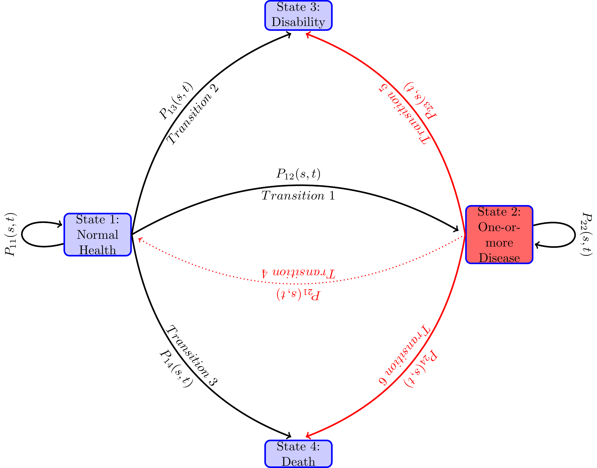
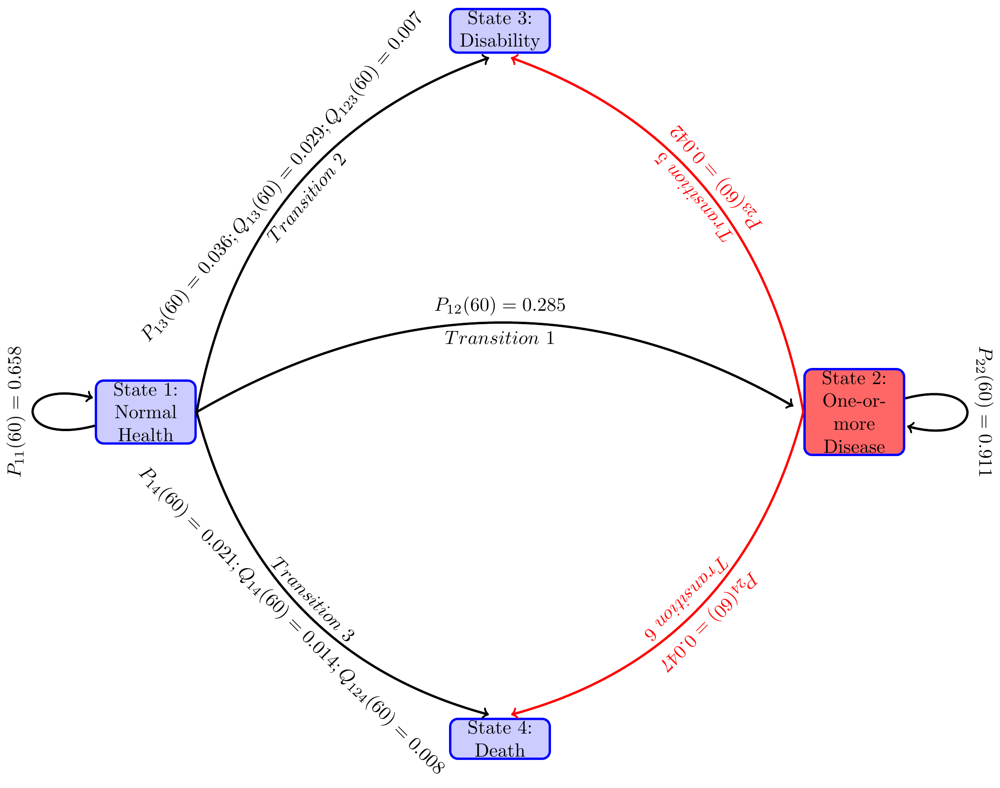
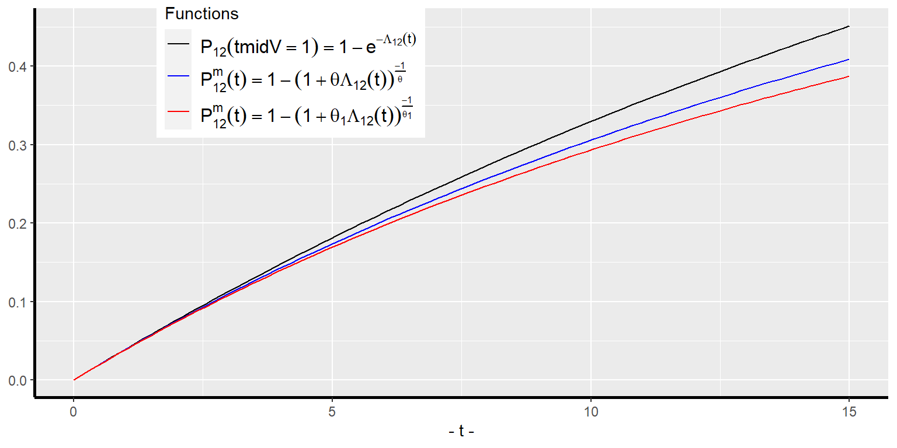

Acknowledgement and disclaimer1
1 Introduction
Identification of factors that determine disability and mortality incidence rates is important for disability programs such as Social Security Disability Insurance (DI) and the Supplemental Security Income (SSI) programs. According to the biology of living organisms, all individuals succumb to aging, and experience diseases and disabilities of various kinds as they age. Diseases and disabilities can also be caused by injuries, genetic abnormalities and epigenetic reprogramming (epigenetic includes environmental factors and health-related individual behaviors). Some individuals stay in good health for a long period of time and then become disabled or die; some develop one or more chronic diseases such as diabetes, cancer, vascular, musculoskeletal, cognitive and mental disorders that expedite incidence of disability and death. I use the Health and Retirement Study (HRS) data to estimate a dynamic multi-state time-to-event econometric model of pathways to disability or to death before disability through various health states—specifically, normal health and one-or-more chronic diseases—before reaching age 65 for individuals in their early 50’s. Genetic and environmental factors, health care use, health related behaviors and cognitive factors determine the progression of unobserved stock of internal health (also known as health-capital in economics, and frailty in gerontology). The state of internal health determines the risks of transitions to other health states and their transit times. I estimate the effects of these factors on the probabilities of transitions and the transit times along the pathways that individuals in their 50’s follow before reaching age 65.
Before exploring pathways to disability, it is important to clarify the definition of disability that I study in this paper The definition of disability depends on the purpose of its use. Disability is a multidimensional concept and is defined in the literature using simple descriptions, conceptual models, classification schemes, and measurement methods (for details, see Hahn (1985);Marks (1997);Altman (2001);Albrecht and Verbrugge (2003);Marks (1997);Altman (2001);Snyder et al. (2008)). I use the following statutory definition of disability that the Social Security Administration use for the DI and SSI programs (specified in the Social Security Act, Title II, § 223(d), paragraph (1)A):
“inability to engage in any substantial gainful activity by reason of any medically determinable physical or mental impairment which can be expected to result in death or which has lasted or can be expected to last for a continuous period of not less than 12 months”
and with a vocational grid addendum stated in paragraph (2)A,
“An individual shall be determined to be under a disability only if his physical or mental impairment or impairments are of such severity that he is not only unable to do his previous work but cannot, considering his age, education, and work experience, engage in any other kind of substantial gainful work which exists in the national economy, regardless of whether such work exists in the immediate area in which he lives, or whether a specific job vacancy exists for him, or whether he would be hired if he applied for work. For purposes of the preceding sentence (with respect to any individual), “work which exists in the national economy” means work which exists in significant numbers either in the region where such individual lives or in several regions of the country.”
The definition of disability for the SSI program is almost identical.2
While a lot has been said about the definition of disability, very few papers provide a biological or a behavioral mechanism of disablement process from which policy implications for clinical practice and health care policy can be derived. The first disablement model was introduced by the sociologist Nagi (1965), which he further refined in (Nagi 1976, 1991). This model was extended by (Verbrugge and Jette 1994; Verbrugge, Latham, and Clarke 2017) who added biological, environmental and behavioral risk factors affecting all four stages of the disablement process.3 Disablement models are conceptual schemes that describe four distinct but related stages to arrive at a disability: starting from a pathology, leading to developments of impairments of body systems, then to functional limitations and finally to disability. I briefly describe these stages below.
Pathology is an interruption of the normal physiological process caused by developmental disorders (such as cerebral palsy, seizure disorders, mental retardation, hearing and vision impairments, autism, PKU, Huntington disease), infection, injury, trauma, metabolic imbalance (such as diabetes), degenerative disease processes (i.e., deterioration over time the functioning or the structure of tissues or organs leading to osteoarthritis, osteoporosis, cancer, Alzheimer or Parkinson’s disease) or any other disease process. The impairments of body system involve loss or abnormality of an anatomical, physiological, mental, or emotional nature. Functional limitations include not being able to have one’s ADL (activities of daily living) and IADL (instrumental activities of daily living), role activities (such as occupation, parenting, grand-parenting, and student roles), social activities (such as attending church and other group activities, and socializing with friends and relatives) and leisure activities (such as sports and physical recreations, reading, and distinct trips). The final stage is the disability, the definition of which depends on the purpose of the study and involves a combination of all the above models of disability.
The disablement models are useful for conceptualization, diagnosis and record keeping of disabilities but limited for the study of the causes of disability in epidemiological and policy research. The starting point of the above disablement models is an onset of a chronic disease or an injury causing a disability. For policy research on disability and mortality, it is important to study the biomedical processes modulated by genetic, epigenetic and behavioral factors in the manifestation and prognosis of disabling diseases and on the risk of disabling injuries. While an injury as the starting point of disablement process serves well for certain purpose such as for workers’ compensation in sports, construction and factories, a large proportion of disabilities in the mid ages are caused by diseases–both physical and mental (see for instance, Case and Deaton (2015);The US Burden of Disease Collaborators (2018)). Mechanism for non-accidental death is similar. Diseases, leading to disabilities — both developmental disabilities and late age disabilities — and to mortality are the result of modulated biomedical processes, which at the microbiology level are the outcomes of cellular aging. While aging, an individual succumbs to diseases and injuries leading to disability or death. Not all individuals experience the same deterministic aging process—some experience faster aging and aging related diseases than others. Why do people experience faster aging, diseases and mortality? At what stage of life, does it all begin—at mid-ages, at birth, or even earlier at conception? How do various genetic, epigenetic and behavioral factors modulate the aging process, culminating in diseases, disabilities and death? What biomarkers and epigenetic factors (including environmental factors and individual health related behaviors) predict better the process of aging and incidence of disease, disability and death over the lifespan?
I will not get into the details of the biomedical literature on these issues. Similar to the literature of behavioral genetics of personality and intelligence, the nature-nurture controversy exists in the health literature: Is it all nature (i.e., all genetics or genome) or is it all nurture (i.e., all epigenetics or epigenome modulated by the environment and health related individual behaviors) that determines the progression of health over the life span of an individual? The consensus so far is that it is neither the nature nor the nurture; it is a combination of the two that determines health developments over one’s life span. The research so far found that certain genetic make-ups (i.e., certain sequences of DNA) predispose one to certain diseases, (see for instance, Barondes (1999);Khoury et al. (2009);Bookman et al. (2011)), but the epigenetic inputs—especially at the very early stage of life, i.e. in the womb, but not the least at later stages of life—are also very important determinants of life expectancy and quality of life. The biomedical research so far has not found genes that are responsible for aging and age related diseases, leading to early disability and mortality. The twenty-first century biomedical research emphasizes more on the epigenetic factors than the genetic factors to explain the pattern of health developments over the life-span.
At the cellular level, aging means cellular senescence—i.e., after a certain number of cell divisions, it stops dividing or have defective replications, causing tissues or organs to increasingly deteriorate over time. Senescence leads to incidence of degenerative diseases. It is generally observed that women live longer than men and those with better life styles in terms of smoking, exercising and diets delay the aging process (for evidence, see Blair et al. (1989);Vaupel (2010);Austad and Fischer (2016);Zarulli et al. (2018)). This line of biological inquiry led to explore the (cellular) molecular mechanism of aging process and to find biomarkers of aging that can be used to diagnose, monitor, and improve the age related physiological decline and disease. A good indicator of the aging process at the cellular level is the rate of decay in the telomere length. Telomeres are the caps at the end of chromosomes in a DNA sequence. They look like the plastic caps at the end of shoelaces. The main function of telomeres is to protect cells preserving the genetic content within each chromosome during cell divisions. Unfortunately, the telomere length shortens in the course of each cycle of chromosomal replication during cell division, reaching the Hayflick limit (about 40 to 60 cell divisions, Hayflick (1965)) with a critically short telomere length, after which the cells stop dividing or divide with chromosomal abnormalities. The rate of shortening of the telomere length is modulated by telomerase enzyme. Why the rate of decay in telomere length varies for individuals is an active area of biomedical research and the mechanism for it is not yet fully understood. Many studies find that higher stress of any kind— psychological, financial, social and chemical—is strongly associated with higher oxidative stress, lower level of telomerase enzyme, and shorter telomere length. Furthermore, shorter telomere length is associated with health related phenotypes of poorer health and higher risks for cardiovascular and immune diseases (see, Epel et al. (2004);Shalev et al. (2013);DiLoreto and Murphy (2015);Shalev and Belsky (2016);Simons et al. (2016)).
More recently emerged second line of biomedical research on aging and aging related diseases explores the epigenetic (which literally means on top of genetic) mechanism for these life-cycle processes. (See for instance, Alisch et al. (2012);Barres and Zierath (2011);Boks et al. (2009);Esteller (2008);Hannum et al. (2013);Horvath (2013)).
The above literature emphasizes that aging and age related diseases are associated with shortening of telomere length and changes in global methylation, and that stress, smoking, drinking, chemical misuse, and diet are important modulators for these changes. The question remains, what are the critical periods or the developmental milestones in life cycle that program the motions of health developments over the life span of an individual?
Research along this line began with the striking findings of (Barker 1990, 1998) and later of Gluckman et al. (2008). They found strong associations between birth weight and many later life chronic diseases, including hypertension, coronary artery diseases, type 2 diabetes, and osteoporosis. Many other studies find that much of health developments in later life is determined very early in life—specifically during the prenatal period, right after conception, i.e. in the womb. Sometimes it is said in social sciences that inequality begins in the womb. The effect of an environmental stress in the womb on later life diseases and developmental outcomes is known as developmental programming. Gluckman et al. (2008) observes that ``like the long latency period between an environmental trigger and the onset of certain cancers, the etiology of many later life diseases such as cardiovascular disease, metabolic disease, or osteoporosis originate as early as in the intrauterine development and the influence of environments that created by the mother.’’ For more empirical evidence on the developmental origin of later life diseases, see (Barker 2007; Thornburg et al. 2010). The papers by (Kanherkar, Bhatia-Dey, and Csoka 2014; Barbara, Abdilla, and Calleja-Agius 2017) provide detailed descriptions of the biological process of development of life and health, starting from the conception. They explain how the global DNA demethylation of the fertilized egg right after conception creates an epigenetic “clean slate” to start a new life, followed by rapid remythylation to reprogram the maternal and paternal genomes to create epigenetic configurations in the fetus which rapidly produce specialized cells of the body with cell divisions. The environment provided in mother’s womb during those times has long-term effects on the child’s later cognitive and other health developments. While inputs at early milestone ages are important for later age health, healthy living and good healthcare are still important for maintaining health in mid ages.
Studies in social sciences find that low socio-economic status (SES) is associated with inflammation, metabolic dysregulation, and various chronic and age-related diseases such as type 2 diabetes, coronary heart disease, stroke, and dementia, and that low SES create epigenetic changes in individuals that lead to faster biological aging even after controlling for health-related behaviors such as diet, exercise, smoking, drugs & alcohol, or having health insurance, see for evidence, Simons et al. (2016). The study by Karakus and Patton (2011) uses the Health and Retirement Studies data and after controlling for education, race, income, health risk indicators like BMI and smoking, functional limitations like gross motor index, health limitations for work, and income, they find depression at baseline leads to significantly higher risk for developing diabetes, heart problems, and arthritis and no significant effect on developing cancer during the 12 years follow-up period. Renna (2008) uses National Longitudinal Survey of Youth data to find no significant effect of alchohol use on labor market outcomes such as on earnings or hours of work. Seib et al. (2014) collected data on a sample of older women in Australia and found that severe traumatic life events create strong stress levels that influence them to have unhealthy living and diet measured by BMI and develop stronger and earlier health problems. Conti, Berndt, and Frank (2009) utilize the CES-D data in the Health and Retirement Survey dataset to construct a measure of depression, and find that depression of men and women have significant negative effect on employment status, early retirement, and application for DI/SSI benefits. More recently, Case and Deaton (2015) found a racial reversal in the mortality rates of the US mid-age population between 1993 and 2013. They found that all-cause mortality and morbidity of non-Hispanic white men and women of ages 45-55 have been increasing during the period, mainly due to increases in their incidence rates of drug and alcohol poisoning, suicide, chronic liver diseases and cirrhosis. Morbidity of the group culminate into serious disabilities and crowding into DI and SSI rolls and to lower labor force participation rates, especially among women. Such time reversals are confined to that age and racial group only, and the rates are higher for less educated than educated groups. They attribute such behavioral changes to increased (within and inter-generational) income inequality and rises in prescription of pain killer drugs and opioid, and falling price and easier availability of heroin.
I introduce a statistical multi-state time-to-event life history model of incidence of chronic diseases, disability and death at mid-ages, incorporating childhood factors and health behaviors. Many factors at the cellular level are unobserved or imperfectly instrumented with observed data which causes biases in the parameter estimates of included regressors. I correct for unobserved heterogeneity biases extending some of the statistical techniques from the literature on generally studied two-state models to the multi-state model of this paper.
The rest of the paper is organized as follows. In Section 2, I provide an extended disablement model of this paper.In Section 3, I describe the subset of the Health and Retirement Survey dataset that I use for this study. In Section 4, I describe the econometric specification, estimation issues. In Section 5, I present the estimates and discuss the results. In Section 6, I analyze the quantitative effects of social policies improving the childhood factors for various social groups on their probabilities of maintaining good health and incidence of disability or mortality. Section 7 concludes the paper.
2 The Model
With insights from the disablement modeling literature of (Nagi 1965; Verbrugge and Jette 1994; Verbrugge, Latham, and Clarke 2017) and the biomedical literature on the aging process, I formulate and then estimate an econometric model of paths to enter disability rolls. An individual can be on the disability rolls if the individual has a qualifying disability before reaching age 65 and has not died before applying for disability benefits. I assume that an individual’s getting on the disability rolls is a terminal event, i.e., the individual does not move to normal or diseased health states. After reaching this state, the individual is not followed any further. A competing risk for getting on the rolls is death before age 65. This is a competing risk because an individual cannot be at risk for disability enrollment if the individual is already dead and thus not at risk to get on the disability rolls. The individual is not followed after the event of enrollment onto the disability program as this is the event of interest in this paper and the assumption that once in disability, individual does does not recover. In the technical terms defined below, we treat the health states—disability and death—as absorbing states, i.e., once in that health state, an individual remains in that health state and removed from the sample for later considerations. An individual can be in normal health and then become disable or die before becoming disabled or may first become diseased with one or more diseases and again from that health state become disabled or die before becoming disabled. Various factors affect individual risks of various transitions of health states and the time they stay in each health state along the life-span. Both, in turn, determine the timing of getting on to the disability rolls.
An individual at any time along the path to disability or to death before age 65 will be in the normal health state for a length of time, and then moves to another health state, say diseased health state, and remain there for some time, and then jump to the health state of disability or to death, or reach 65 and censored after that. There are many possible paths that an individual can follow. Even when the health states they pass through are the same, the duration of stay in each health state (also known as the waiting time in stochastic process literature) could vary. Each configuration of visited states and the waiting times in those states constitute one path. When time is continuous, the number of paths that one can follow is infinite. For an individual one path maybe more likely than another and may depend on the individual’s genetic and prior health related behaviors. From the diagram below one can see various paths that an individual may follow during the study period. The focus of the paper is to study the probabilities of various transitions and the duration of stay in each health state.
I model the paths through various health states that individuals follow along their life-spans as a continuous-time finite-state Markov process {X(t)},t \in T, where at each time point t during the study period T, the random variable X(t) takes a value from a finite set S of health states. In the present study, I take T=\left[ 0,14\right], treating age 51 as time period t=0 and age 65 as time period t=14. The state space S of the stochastic process contains health states 1= “healthy or normal health”, 2= “ill with one or more chronic disease”, 3= “disabled with DI-or SSI-qualifying disability” and 4= “Death”. Sometimes I will use S=\{h, i, d, D\} in place of \{1,2,3,4\}.
Let the transition probabilities of our stochastic process X\left( t\right) be given by
P_{hj}(s,t)=Prob(X(t)=j \mid X(s)=h), \tag{1} for all h,j\in S, s,t\in T, t\geq s. Denote the matrix of transition probabilities by P\left( s,t\right) \equiv \left( P_{hj}(s,t)\right) _{h,j=1...4}.
An individual at time t may be in any of the health states in S, the probability of which, known as the occupation probability. The occupation probability at time t can be viewed as the proportion of population of age t who are in health state j. Let \pi_j(t) be the occupation probability of an individual in health state j at time t. Denote all the occupation probabilities as a column vector \pi(t) \equiv \left((\pi_j)(t), j \in S\right). Then the occupation probabilities move over time recursively as follows, \pi(t) = \pi'(s)P(s,t), 0 \leq s<t. Note that given an initial distribution \pi(0) and the transition probabilities \left( P_{hj}(s,t), 0 \le s < t ,s, t \in T \right), we can calculate the occupation probabilities in all periods in T from the above recursive equation.
The following path diagram describes various pathways that individuals may go through in their mid-ages.
It is known that the transition probability process of the stochastic process satisfies Chapman-Kolmogorov equation P\left( s,t\right) =P\left( s,u\right) \cdot P\left( u,t\right) ,\text{ for all }s,u,t\in T\text{ with }s<u<t \tag{2} I assume that the transition probabilities P\left( s,t\right) are absolutely continuous in s and t. A transition intensity—also known as the hazard rate in the survival analysis literature when there is only one event of interest, and as the cause-specific hazard rate in the competing risk analysis4—of the health process {X_{t}} from health state h to health state j at time t is the derivative \begin{aligned} \lambda _{hj}(t) &=\lim_{\Delta t\rightarrow 0}\frac{P_{hj}(t,t+\Delta t)-P_{hj}\left( t,t\right) }{\Delta t},\text{ for }j\in S \nonumber \\ &=\lim_{\Delta t\rightarrow 0}\frac{P_{hj}(t,t+\Delta t)}{\Delta t},\text{ for }j \ne h \nonumber \\ \lambda _{hh}(t) &=\lim_{\Delta t\rightarrow 0}\frac{P_{hh}(t,t+\Delta t)-1 }{\Delta t}, \text{ for } j=h, \\ &=-\lim_{\Delta t\rightarrow 0}\frac{\sum_{j\neq h}P_{hj}(t,t+\Delta t)}{ \Delta t} \nonumber \\ &=-\sum_{j\neq h}\lambda _{hj}\left( t\right) \nonumber \end{aligned} \tag{3} For absorbing states h=3,4, the transition intensities \lambda _{hj}(t)=0 , for all j,j\in S. Denote the matrix of transition intensities by \Gamma \left( t\right) =\left( \begin{array}{cccc} -\left( \lambda _{12}\left( t\right) +\lambda _{13}\left( t\right) +\lambda _{14}\left( t\right) \right) & \lambda _{12}\left( t\right) & \lambda _{13}\left( t\right) & \lambda _{14}\left( t\right) \\ 0 & -\left( \lambda _{23}\left( t\right) +\lambda _{24}\left( t\right) \right) & \lambda _{23}\left( t\right) & \lambda _{24}\left( t\right) \\ 0 & 0 & 0 & 0 \\ 0 & 0 & 0 & 0 \end{array} \right) . \tag{4} While P_{hj}(s,t) is an unconditional probability, the transition intensity or the hazard rate \lambda _{hj}(t)\Delta t is the conditional (instantaneous) probability of an individual experiencing the event j in the small time interval [t, t +\Delta t) given that he has been in state h at time t. This conditional probability may depend on time t and other characteristics and the path through various health states that is followed by the individual to be in the health state h at time t. I am assuming that the process is Markovian, i.e., it depends only on the health state h that it is in at time s, and on the times s and t, but does not depend on the path that he followed to come to state h at time s. Or in other words, the future health condition depends on the current health condition but not how one came to the current health state.
It can be shown that the Chapman-Kolmogorov equation leads to the following Kolmogorov forward equation \frac{\partial P\left( s,t\right) }{\partial t}=P\left( s,t\right) \cdot \Gamma \left( t\right) \tag{5} and the initial condition P\left( s,s\right) =I for all s\in T. Thus, given intensities \Gamma \left( t\right) , the solution P\left( s,t\right) of the above differential equation defines a continuous time Markov chain and conversely, given absolutely continuous transition probabilities P\left( s,t\right) for a continuous time Markov chain, one has the Kolmogorov forward Equation 5. For the empirical work, I characterize the Markov chain of pathways through various health states with the intensity matrix \Gamma (t) and in our empirical specification, I parameterize \Gamma \left( t\right) as function of covariates and estimate these using the HRS data set. I then use these estimates of the intensity matrix to estimate the transition probabilities and study their properties.
From the Fundamental Theorem of ordinary differential equations, we know that there exists a solution P(s,t) to the system of ordinary differential equations in Equation 5. In general, it is not possible to find analytical solution of the Kolmogorov forward equation. However, given the special structure for the intensity matrix and the assumption that there is no transition from the diseased health state to normal health state, and from the disability health state to diseased or normal health states, we can analytically solve the Kolmogorov forward Equation 5. The solution derived in the Appendix is as follows: P_{11}\left( s,t\right) =\exp \left( -\int_{s}^{t}\left( \lambda _{12}\left( u\right) +\lambda _{13}\left( u\right) +\lambda _{14}\left( u\right) \right) du\right) \tag{6} P_{12}\left( s,t\right) =\int_{s}^{t}P_{11}\left( s,u\right) \lambda _{12}\left( u\right) P_{22}\left( u,t\right) du \tag{7} P_{13}\left( s,t\right) =\int_{s}^{t}\lambda _{13}\left( u\right) P_{11}\left( s,u\right) du+\int_{s}^{t}\left[ P_{11}(s,u)\lambda _{12}(u)\int_{u}^{t}P_{22}\left( u,\tau \right) \lambda _{23}\left( \tau \right) d\tau \right] du \tag{8} P_{14}\left( s,t\right) =\int_{s}^{t}\lambda _{14}\left( u\right) P_{11}\left( s,u\right) du+\int_{s}^{t}\left[ P_{11}(s,u)\lambda _{12}(u)\int_{u}^{t}P_{22}\left( u,\tau \right) \lambda _{24}\left( \tau \right) d\tau \right] du \tag{9} P_{22}\left( s,t\right) =\exp \left( -\int_{s}^{t}\left( \lambda _{23}\left( u\right) +\lambda _{24}\left( u\right) \right) du\right) \tag{10} P_{2h}\left( s,t\right) =\int_{s}^{t}\lambda _{2h}\left( u\right) P_{22}\left( s,u\right) du, h=3,4 \tag{11}
The above formulas for the transition probabilities have interesting interpretations. If we view state 1 as alive and states 2,3 and 4 (the states that an individual can move to from state 1) as the competing causes of death, then by the definition of transition probabilities in Equation 1, P_{11}(0,t) is the probability that the individual is alive at time t, i.e., did not die from any of the competing causes 2,3 or 4 of death before age t. That is, P_{11}(0,t), is nothing but the survival function of the competing risk literature. Denote by \lambda _{1}(t)=\lambda _{12}(t)+\lambda _{13}(t)+\lambda _{14}(t), the combined risk or the hazard rate of exiting state 1 at time t. Then \int_{0}^{t}\lambda _{1}\left( u\right) du is the cumulative hazard (also known as the cumulative risk or the integrated hazard) of dying by time t. In P_{11}(s,t) the individual begins state 1 at time s in stead of at time 0, and is more relevant in the multi-state models as the individual could be in some other health state before moving to health state at time s. In what follows, I will sometimes denote a transition j\to h by a Greek letter or when the reference of the from state j and the to-state h is important, I will denote it by jh. Furthermore, I will often abbreviate a transition probability P_{hj}(0,t) as P_{hj}(t).
The interpretation of the other transition probabilities are slightly more complex in the multi-state context as there are multiple pathways to move from one state to another state and not all other states that one moves to are absorbing states. For instance, the transition probability P_{12}(s,t) is by definition the probability of an individual being in health state 2 (i.e., have one-or-more diseases) at time t given that he was in health state 1 at time s. The formula for it in means that for an individual in health state 1 at time s to be in health state 2 at time t, he has to be in health state 1 up to a time u, (s<u<t), the probability of which is P_{11}(s,u), and make an instaneous transition at time u (i.e., during [u,u+du) from state 1 to state 2, the probability of which is \lambda_{12}(u)du and remain in state 2 during the remaining time u through t, the probability of which is P_{22}(u,t)). Moreover, this transition time u takes any of the mutually exclusive values between s to t and thus we need to integrate over these mutually exclusive values of u between s and t, which is represented in the formula in Eq. .
P_{13}(s,t), the probability of a person who is in normal health, i.e. in state 1 at time s to be on the DI rolls, i.e., in state 3 at time t has two parts—corresponding to the two mutually exclusive paths that can lead to this: First, he can be in good health state until time u (s<u<t) (the probability of which is P_{11}(s,u)) and then transit to the disability health state 3 at time u with probability \lambda_{13}(u)du. Second, from state 1 at time s, he moves to state 2 at time u (s<u<t) (the probability of which is P_{12}(s,u)) and then transit to the disability health state 3 at time u with probability \lambda_{13}(u). Once arrived on the on he stays there until t with probability 1 (as it is an absorbing state) Since this is true for any value of u, we integrate over u to get the probability. I denote the probability of the direct path 1 \to 3 as Q_{12}(s,t) and the probability of the path 1 \to 2 \to 3 as Q_{123}(s,t). Similar is the interpretation of the two components for P_{14}(s,t) in Equation 9.
There are various random variables of interest corresponding to the waiting times. Let T ^1 denote the duration of time one is in health state 1, T ^3 the time one takes to move to health state 3 starting in good health state 1 at time t=0. Similarly T ^4 be the time of death starting at health state 1 at time t=0. What are the waiting time distributions and the expected values of these random variables for different covariate values?
Suppose one is at normal health at age 50, our base time period, 0, the probability of his becoming disabled by time s directly from normal health, (i.e., not first becoming diseased and then become disabled) will depend on the competing risks of leaving the normal health state by time s either because of death or because of acquiring one or more diseases. Also note that if he is in good health at time 0, the transition probability P_{13}(0,s), i.e., the probability that he will be in disabled state at time s is the sum of likelihood of all different mutually exclusive time paths.One such path is that he is in good health til time u, u <s the probability of which is P_{11}(0,u), and then he instantaneously become disabled at time u, which has the instantaneous probability of \lambda_{12}(u) (the intensity function) and then he remains in disability state from time u to time s which has probability P_{33}(u,s). But given our assumption that the disability health state is an absorbing state, P_{33}(u,s)=1. Thus, the probability of following this path is given by P_{11}(0,u)\lambda_{12}(u). From this one can calculate the probability of directly becoming disabled by time s from the normal health at time 0 is \int_0^s P_{11}(0,u)\lambda_{13}(u)du, I will denote this direct probability as Q_{13}(0,s). The other way he could be in the disability health state by time s from the normal health state at time 0 is that he stays in normal health until time u, u<s (the probability of which is P_{11}(0,u), then moves to a diseased state at time u with instantaneous probability given by the intensity rate \lambda_{12}(u) and stays in diseased state until time \tau, u < \tau < s the probability of which is P_{22}(u,\tau) and become disabled at time \tau with instantaneous probability given by the intensity function \lambda_{23}(\tau) and then he remains in the disability state during the remainder of the time s-\tau whose probability is 1 as disability is an absorbing state. Thus starting from the normal health, the probability Q_{123}(0,s) of his being in disability state at time s via the disease state is Q_{123}(0,s) = \int_0^s P_{11}(0,u)\lambda_{12}(u)\int_u^s P_{22}(u,\tau) \lambda_{23}(\tau)d\tau du. Finally, P_{13}(0,s)=Q_{13}(0,s)+Q_{123}(0,s). The analytical solution that we will get also will have this property for the transition probabilities.
These qualitative properties of our disablement model can be studied from analytical solutions of these transition probabilities. In general, it is not possible to get analytical solutions. In the next subsection, I derive it under the assumption that the intensity matrix \alpha(t) is time constant, i.e., independent of time t.
\begin{aligned} P_{13}\left( 0,t\right) &=\int_{0}^{t}\lambda _{23}\left( u\right) P_{12}\left( 0,u\right) du \\ &=\int_{0}^{t}\lambda _{13}\left( u\right) P_{11}\left( 0,u\right) +\int_{0}^{t}\int_{0}^{u}P_{11}\left( 0,x\right) \lambda _{12}(x)P_{22}\left( x,u\right) \lambda _{23}\left( u\right) dxdu \\ &=Q_{13}\left( 0,t\right) +Q_{123}\left( 0,t\right) \end{aligned}
2.1 Time constant intensity and explicit solution of the transition probabilities
For the time homogeneous case, we can derive explicit formula for the probabilities of getting on to the disability roll by following paths like 1\rightarrow 3 and 1\rightarrow 2\rightarrow 3 as follows,
\begin{aligned} Q_{13}\left( 0,t\right) &=\frac{\lambda _{13}}{\lambda _{1}}\left[ 1-\exp (-\lambda _{1}t)\right] \\ Q_{123}\left( 0,t\right) &=\frac{\lambda _{12}\lambda _{23}}{\lambda _{2}} \left[ \frac{\exp (-\lambda _{2}t)-\exp (-\lambda _{1}t)}{\lambda _{2}-\lambda _{1}}+\frac{1-\exp (-\lambda _{1}t)}{\lambda _{1}}\right]. \end{aligned}
To get more insight about the interdependence of the transition probabilities and their effects on each other, I consider the time constant case for which the transition probabilities can be solved analytically. Assume that \lambda_{hj}(t) is constant over time, i.e., independent of t, and denote it by \lambda_{hj}. Denote by \lambda _{1}\equiv \lambda _{12}+\lambda _{13}+\lambda _{14}, which is the intensity of exiting state 1 from any of the three competing risks of exit. Similarly, denote the transition intensity of state 2 by \lambda_{2}\equiv \lambda _{23}+\lambda _{24}.
For the time homogeneous case, it is straightforward to calculate all the transition probabilities from Equation 6 - Equation 11 as follows.
\begin{aligned} P_{11}\left( t\right) &=\exp \left( -\lambda _{1}t\right),\\ P_{22}\left(s, t\right) &=\exp \left( -\lambda _{2}(t-s)\right),\\ P_{12}\left( t\right) &=\frac{\lambda _{12}}{\lambda _{2}- \lambda _{1}}\left[ \exp \left( -\lambda _{1}t\right) -\exp \left( -\lambda _{2}t\right) \right] \\ P_{13}\left( t\right) &=\frac{\lambda _{13}}{\lambda _{1}}\left[ 1-\exp (-\lambda _{1}t)\right]\\ &+\frac{\lambda _{12}\lambda _{23}}{\lambda _{2}} \left[ \frac{\exp (-\lambda _{2}t)-\exp (-\lambda _{1}t)}{\lambda _{2}-\lambda _{1}}+\frac{1-\exp (-\lambda _{1}t)}{\lambda _{1}}\right] \\ P_{14}\left( t\right) &=\frac{\lambda _{14}}{\lambda _{1}}\left[ 1-\exp (-\lambda _{1}t)\right] \\ &+\frac{\lambda _{12}\lambda _{24}}{\lambda _{2}} \left[ \frac{\exp (-\lambda _{2}t)-\exp (-\lambda _{1}t)}{\lambda _{2}-\lambda _{1}}+\frac{1-\exp (-\lambda _{1}t)}{\lambda _{1}}\right]\\ P_{2h}\left( t\right) &=\frac{\lambda _{2h}}{\lambda _{2}} \left( 1-\exp \left( -\lambda _{2}t\right) \right) , h=3,4. \end{aligned} \tag{12}
In Equation 12, the first term on the right hand side of P_{13}(t) is the probability of directly transiting to state 3 from 1, i.e. Q_{13}(t) and the second term is the probability of the indirect path 1 \to 2 \to 3, i.e., Q_{123}(t) in the notation of the previous section. Similar is the case for P_{14}(t). It is possible to caluclulate these probabilities separately for our time homogeneous case.
Notice how the transition probabilities are interdependent. For instance, note that how P_{13}(t) changes when there is a reduction in \lambda_{24}. A reduction in \lambda_{24} could be due to discoveries of medical technology that reduces the probability of death from the diseased state.
In the next section, I estimate the constant transition intensities from our data set using maximum likelihood procedure and study dynamics of the transition probabilities for various groups.
3 The dataset and the variables
I use the Health and Retirement Study (HRS) dataset for empirical analysis. A lot has been reported on the family of HRS datasets—about its structure, purpose, and various modules collecting data on genetics, biomarkers, cognitive functioning, and more, see for instance (Juster and Suzman 1995; Sonnega et al. 2014; Fisher and Ryan 2017). The first survey was conducted in 1992 on a representative sample of individuals living in households i.e., in non-institutionalized, community dwelling, in the United States from the population of cohort born during 1931 to 1941 and their spouses of any age. ``The sample was drawn at the household financial unit level using a multistage, national area-clustered probability sample frame. An oversample of Blacks, Hispanics (primarily Mexican Americans), and Florida residents was drawn to increase the sample size of Blacks and Hispanics as well as those who reside in the state of Florida’’, Fisher and Ryan (2017). The number of respondents were 13,593. Since 1992, the survey were repeated every two years, each is referred to as a wave of survey. New cohorts were added in 1993, 1998, 2004 and 2010, ending the survey up with the sample size of 37,495 from around 23,000 households in wave 12 in 2014. RAND created many variables from the original HRS data for ease of use. I create all the variables (with a few exceptions mentioned below) from the RAND HRS dataset version P. The details of the Rand HRS version P can be found in Bugliari et al. (2016).
As mentioned in the introduction, I define the disability health state to be one that qualifies one to be on the disability programs OASDI or SSI. The data on disability is self-reported. Later I plan to use the Social Security Administration’s matched administrative data on this variable and earnings variables not included here. The matched data will, however, reduce the sample size to half, as only 50 percent of the respondents are used for matching HRS with SSA Administrative data. The HRS data collected information on if and when the doctor diagnosed that the respondent has any of the severe diseases such as high blood pressure, diabetes, cancer, lung disease, heart attack, stroke, psychiatric disorder and severe arthritis. I drop respondents who received disability before the first survey year 1992 and I also drop the spouses in the sample who were not born between 1931 to 1941, that is the respondents in our sample are between age 51 to 61 and not disabled or dead in 1992. I ended up with the final sample size of 9,493 for this analysis.
Table 1 provides a few characteristics of the data.
| Percentage distriubtion of health status | ||||||
|---|---|---|---|---|---|---|
| Survey year | Total | Normal | With Diseases | Disabled | Died at age | Censored: 65.00+ |
| 1992 | 9,517 | 39.50 | 59.54 | 0.97 | 0.00 | 0.00 |
| 1994 | 9,425 | 34.49 | 63.15 | 0.81 | 1.55 | 0.00 |
| 1996 | 9,203 | 30.33 | 66.57 | 1.52 | 1.59 | 0.00 |
| 1998 | 8,191 | 25.05 | 62.92 | 1.65 | 1.50 | 8.88 |
| 2000 | 6,533 | 22.50 | 63.10 | 1.32 | 1.73 | 11.36 |
| 2002 | 4,867 | 19.29 | 62.81 | 1.11 | 1.19 | 15.59 |
| 2004 | 3,224 | 15.73 | 57.51 | 1.05 | 1.49 | 24.22 |
| 2006 | 1,581 | 8.92 | 39.66 | 0.25 | 0.89 | 50.28 |
3.1 Variables
The demographic variables White and Female have the standard definition. The variable College+ is a binary variable taking value 1 if the respondent has education level of college and above (does not include some college), i.e., has a college degree and more and taking value 0 otherwise.
cesd: I used a score on the Center for Epidemiologic Studies Depression (CESD) measure in various waves that is created by RAND release of the HRS data. RAND creates the score as the sum of five negative indicators minus two positive indicators. ``The negative indicators measure whether the Respondent experienced the following sentiments all or most of the time: depression, everything is an effort, sleep is restless, felt alone, felt sad, and could not get going. The positive indicators measure whether the Respondent felt happy and enjoyed life, all or most of the time.’’ I standardize this score by subtracting 4 and dividing 8 to the RAND measure. The wave 1 had different set of questions so it was not reported in RAND HRS. I imputed it to be the first non-missing future CESD score. In the paper, I refer the variable as cesd. Steffick (2000) discusses its validity as a measure of stress and depression.
cogtot: This variable is a measure of cognitive functioning. RAND combined the original HRS scores on cognitive function measure which includes “immediate and delayed word recall, the serial 7s test, counting backwards, naming tasks (e.g., date-naming), and vocabulary questions”. Three of the original HRS cognition summary indices—two indices of scores on 20 and 40 words recall and third is score on the mental status index which is sum of scores “from counting, naming, and vocabulary tasks”—are added together to create this variable. Again, due to non-compatibility with the rest of the waves, the score in the first wave was not reported in the RAND HRS. I have imputed it by taking the first future non-missing value of this variable.
bmi: The variable body-mass-index (BMI) is the standard measure used in the medical field and HRS collected data on this for all individuals. If it is missing in 1992, I impute it with the first future non-missing value for the variable.
Now I describe the construction of the behavioral variables.
Behavior: Smoking: This variable is constructed to be a binary variable taking value 1 if the respondent has reported yes to ever smoked question during any of the waves as reported in the RAND HRS data and then repeated the value for all the years.
Behavior: Exercising: The RAND HRS has data on whether the respondent did vigorous exercise three or more days per week. I created a variable to take value 1 in each period if the respondent did vigorous exercise three or more days per week in any of the waves, and value 0 otherwise. I then assign that variable to the variable Behavior: Exercising for all the years.
4 Econometric parameterization and Estimation
In statistical models, the dependence of transition probabilities on individual characteristics is generally done through parametric or semi-parametric specification of the transition intensity functions \Gamma \left( t\right). One then estimates the transition probabilities from the non-parametric or semi-parametric estimates of the integrated transition functions. An integrated transition intensity function \Lambda _{hj}\left(t\right) for a transition h \to j is defined by \Lambda _{hj}\left(t\right) =\int_{0}^{t}\lambda _{hj}\left( u\right) du. Just like for a continuous random variable, it is easier to estimate its cumulative density function nonparametrically than its density function, for the time-to-event data with censoring, it is easier to estimate the integrated hazard function than the intensity function. While for the discrete case this problem does not arise, estimation of transition probabilities via nonparametric estimates of the integrated hazard function is an unified approach encompassing both discrete time and continuous time data. I follow this strategy.
To explain and gain insights into this estimation strategy, denote the matrix of all the cumulative hazard functions as \Lambda \left(t\right) =\left( \Lambda _{hj}\left(t\right) \right) _{h,j=1,2,3,4}, and the matrix of the derivatives of the component functions by d\Lambda \left( t\right). Let the time interval [s,t] is subdivided into a partition of m sub-intervals with cut-off points s=t_{0}<t_{1}<...<t_{m}=t. Denote the partition by P(m). Denote the largest size of the sub-intervals by |P(m)|\equiv \max \{|t_{i}-t_{i-1}|,i=1,...,m\}. Applying repeatedly the Chapman-Kolmogorov Equation 2 on the sub-intervals of the partition, we have P(s,t)=P(t_{0},t_{1})\cdot P(t_{1},t_{2})\cdot ...\cdot P(t_{m-1},t_{m})=\prod_{i=1}^{m}P(t_{i-1},t_{i}) \tag{13}
Note that as |t_{i-1}-t_{i}|\rightarrow 0, the transition probability matrix P(t_{i-1},t_{i})\rightarrow P(t_{i-1},(t_{i-1}+dt)=I+\Gamma (t)dt.5 With finer subdivisions of the interval [s,t] such that the maximum length of the sub intervals tends to 0, the right hand side of Equation 13 converges to a matrix called the the product integral6 of the integrated hazard functions \Lambda (s,t). This product integral is denoted as \widetilde\prod_{s}^{t}\left( I+d\Lambda \left( u\right) \right). Or in other words, the transition probabilities of a stochastic process parameterized via an intensity process is given by the product integral of the integrated transition intensity functions.
P(s,t) = \widetilde\prod _{s}^{t}(I+d\Lambda(u)). \tag{14}
The above product-integral solution is a generalization of the Kaplan-Meier (Kaplan and Meier (1958)) product-limit formula for the survival function in survival analysis. The product integral formula unifies both discrete time and continuous time Markov processes. It is an extremely useful apparatus for statistical analysis of Markov processes.
The most widely used statistical procedure to estimate the transition probabilities P(s,t), s,t\in T,s<t is to plug in an estimate \Lambda \left( u\right) in Equation 14. The effect of covariates is incorporated by conditioning the transition intensity functions \Gamma (t;X(t)) on the covariates process X(t). There are many ways to get these estimates. I will follow two approaches in this paper: First, I will explore the more widely used non-parametric Aalen-Johnson-Fleming method via Nelson Aalen estimates for each-component of the \hat{\Lambda}\left( u;X\left( u\right) \right) with Cox proportional hazard model to incorporate the time-varying covariate effects in the next sub-section. Second, the Neural network approach explored in a later section.
4.1 Aalen-Johansen Estimator of Transition Probabilities
Most widely used statistical procedure incorporates the time-varying covariates for the transition probabilities by specifying a semi-parametric functional form for the intensity hazard functions \lambda _{hj}\left( t;X\left( t\right) \right) =\lambda _{hj}^{0}\left( t\right) e^{\beta _{hj}^{\prime }X\left( t\right) }. \tag{15}
In the above specification, \lambda _{hj}^{0}\left( t\right) is known as the baseline hazard function. The specification of transition intensity in Equation 15 is known as the proportional hazard model. It aggregates the effects of the regressors linearly as a measure of some kind of latent factor, and that latent factor shifts the baseline hazard proportionately, i.e., the effect on hazard is uniform over time. Two papers (Fleming (1978) and Aalen and Johansen (1978)) independently extended the Kaplan-Meier nonparametric product limit estimator from survival analysis to the multi-state time to event models. While Fleming (1978) gave the estimator for complete data, Aalen and Johansen (1978) gave the estimator for censored data. To describe the Aalen-Johansen estimator, let me introduce some concepts and notation. For each individual i,i=1,2,...,n and corresponding to each transient health state, h,h=1,2, define two types of stochastic processes: (1) the counting processes N_{hj,i}(t) denoting the observed number of transitions from health state h to health state j that the individual i has made by time t—which in our case is either 0 or 1, since by assumption when an individual exits a health state, the individual does not return to it in future ; and (2) Y_{h,i}(t), taking value 1 if individual i is at risk at time t for transition to another possible health state, and taking value 0 otherwise.
Let us focus on one transition h\rightarrow j. Denote by \bar{N} _{hj}(t)=\sum_{i}^{n}N_{hj,i}(t), a counting process measuring the number of transitions of the h\rightarrow j in the sample at time t, \bar{Y} _{h}(t)=\sum_{i}^{n}Y_{h,i}(t), a counting process measuring the number of individuals in the sample at risk for a transition at time t, and \bar{M} _{hj}(t)=\sum_{i}^{n}M_{hj,i}(t). In any empirical study the data will be at the discrete times, say in ordered times 0=t_{0}<t_{1}<...<t_{m}. At each time t_{i}, we calculate \hat{\lambda}_{hj}\left( t_{i}\right) =\frac{\triangle \bar{N}_{hj}\left( t_{i}\right) }{\bar{Y}_{h}\left( t_{i}\right) },j\neq h, \tag{16}
Without covariates, the Nelson-Aalen non-parametric estimate of the integrated intensity functions is given by, for each h=1,2 \begin{aligned} \hat{\Lambda}_{hj}\left( t\right) &=\sum_{i:t_{i}\leq t}\hat{\lambda} _{hj}\left( t_{i}\right) ,j\neq h, \nonumber \\ \hat{\Lambda}_{hh}\left( t\right) &=-\sum \hat{\Lambda}_{hj}\left( t\right) \\ \hat{\Lambda}_{hj}\left( t\right) &=0\text{ for all other }h,j\text{ combinations} \nonumber \end{aligned} \tag{17}
The Aalen-Johansen estimator \hat{P}(s,t),s,t,\in T,s<t for the transition probabilities is obtained by substituting for each component hj the Nelson-Aalen estimates \hat{\Lambda}_{hj}(t) and then applying the product integral formula Equation 14 as follows \hat{P}\left( s,t\right) =\prod\limits_{s<u<t}\left( I+d\hat{\Lambda}\left( u\right) \right) =\prod\limits_{i:t_{i}\leq t}\left( I+\left[ \hat{\Lambda} \left( t_{i}\right) -\hat{\Lambda}\left( t_{i-1}\right) \right] \right) . \tag{18}
In the counting process framework, Andersen et al. (1993) derive the following generalized Cox partial likelihood to get parameter estimates of the Cox regression models CL\left( \beta \right) =\prod\limits_{i}\prod\limits_{{h=1,2}{{j=2,3,4}{h\neq j}}}\prod\limits_{t}\left( \frac{ Y_{h,i}\left( t\right) \exp \left( \beta _{hj}^{\prime }X_{h,i}(t)\right) }{ \sum_{r}Y_{h,r}(t)\exp \left( \beta _{hj}^{\prime }X_{h,r}(t)\right) }\right) ^{\triangle N_{hj,i}\left( t\right) } \tag{19}
With covariates, one obtains the Cox partial likelihood estimate for \hat\beta_{hj} for each transition h\rightarrow j separately and then computes an weighted risk set defined by \bar{Y}_{hj}^{\ast }(t)=\sum_{i=1}^{n}Y_{hj,i}\left( t\right) \exp \left( \hat{\beta}_{hj}^{\prime }X_{h,i}(t)\right) . \tag{20} The estimates of cumulative intensities with covariates are obtained from Equation 16 by replacing, \bar{Y}_{h}(t) with \bar{Y}_{hj}^{\ast }(t).
Nelson-Aalen estimator has nice statistical property. For instance, using Martingale calculus it can be shown that the estimator is asymptotically unbiased. Using the results from Martingale theory, one can derive the formula for variance-covariance estimates of parameter estimates and the normalized estimate is normally distributed (central limit theorem holds for normalized parameter estimates), for details see, (Aalen, Borgan, and Gjessing 2008; Andersen et al. 1993; Fleming and Harrington 2005).
The likelihood of the sample is given by7 ,
\begin{split}
L\left( \theta \right) &=\prod\limits_{i}\prod\limits_{{h=1,2}{{j=2,3,4}{h\neq j}}}\left( \prod\limits_{t}\lambda
_{hj,i}\left( t \mid X_{h,i}(t)\right) ^{\triangle N_{hj,i}\left( t\right) }\right) \times \\
&\exp \left( -\int_{0}^{T_{h,i}^{\ast }}\lambda _{hj,i}\left(
u \mid X_{h,i}(u)\right) \right) du
\end{split}
\tag{21}
Parametric models specify distributions for \lambda_{hj,i}(t)’s in Equation 21 such as Weibull and Gamma. Even without covariates, close-form solution of the maximum likelihood parameter estimates for the Weibull model is difficult. But for without covariates time-constant intensity processes, close form solutions can be derived (see next subsection).
4.2 Time constant transition intensities without covariates
For time constant hazard with no covariates, \lambda _{hj}\left( t\right) =\lambda _{hj}, i.e. for exponential model, close-form solution can be derived, which after simplification is given by
\hat{\lambda}_{hj}=\frac{\overline{N}_{hj}}{\bar{T}_{h}^{\ast }}; V\left(
\hat{\lambda}_{hj}\right) =\frac{\lambda _{hj}^{2}}{\overline{N}_{hj}};
\widehat{s.e}\left( \hat{\lambda}_{hj}\right) =\frac{\sqrt{\overline{N}_{hj}}
}{\bar{T}_{h}^{\ast }}
where \overline{N}_{hj}=\sum_{i=1}^{n_{h}}\int_{0}^{t}N_{hj,i}\left( t\right) dt is the total number of transitions of type h\rightarrow j, n_{h} is the total number of individuals in the health state h, and the common denominators in all the expression \bar{T}_{h}^{\ast }=\sum_{i=1}^{n_{h}}T_{h,i}^{\ast } is the total of all completed transition times and censor times of individuals who are in health state h, (h=1,2) in the extended sample.
I first report the estimates of time constant transition intensities for the overall sample and illustrate the interdependence of the transition probabilities and how they evolve over time. Then I compare these estimates of transition intensities and transition probabilities for a selected few groups in Table 3.
Probabilities of following various paths for the estimated time constant parameters: \hat\lambda_{12}= 0.0369, \hat\lambda_{13}=0.0038, \hat\lambda_{14}=0.0019, \hat\lambda_{23}=0.0042, \hat\lambda_{24}=0.0056

To get an idea about these transition probabilities over time, I plot transition probabilities out of state 1 in Figure 3 panel (a) and out of state 2 in Figure 3 panel (b).

| Duration | 1 -> 1 | 2 -> 2 | 1 -> 2 | 1 -> 3 | 2 -> 3 | 1 -> 4 | 2 -> 4 |
|---|---|---|---|---|---|---|---|
| 51 | 1.000 | 1.000 | 0.000 | 0.000 | 0.000 | 0.000 | 0.000 |
| 52 | 0.958 | 0.990 | 0.036 | 0.004 | 0.004 | 0.002 | 0.006 |
| 53 | 0.918 | 0.981 | 0.070 | 0.008 | 0.008 | 0.004 | 0.011 |
| 54 | 0.880 | 0.971 | 0.102 | 0.011 | 0.012 | 0.006 | 0.016 |
| 55 | 0.843 | 0.962 | 0.133 | 0.015 | 0.016 | 0.009 | 0.022 |
| 56 | 0.808 | 0.952 | 0.162 | 0.019 | 0.020 | 0.011 | 0.027 |
| 57 | 0.774 | 0.943 | 0.189 | 0.023 | 0.024 | 0.014 | 0.032 |
| 58 | 0.742 | 0.934 | 0.215 | 0.026 | 0.028 | 0.016 | 0.038 |
| 59 | 0.711 | 0.925 | 0.240 | 0.030 | 0.032 | 0.019 | 0.043 |
| 60 | 0.681 | 0.916 | 0.263 | 0.034 | 0.036 | 0.022 | 0.048 |
| 61 | 0.653 | 0.907 | 0.285 | 0.037 | 0.040 | 0.024 | 0.053 |
| 62 | 0.626 | 0.898 | 0.306 | 0.041 | 0.044 | 0.027 | 0.058 |
| 63 | 0.600 | 0.889 | 0.325 | 0.045 | 0.048 | 0.030 | 0.063 |
| 64 | 0.575 | 0.881 | 0.344 | 0.048 | 0.051 | 0.033 | 0.068 |
| 65 | 0.551 | 0.872 | 0.361 | 0.052 | 0.055 | 0.036 | 0.073 |
| Source: Author's calculation. | |||||||
It will be interesting to compute the distributions of waiting times T_{13} and T_{123} and compare them empirically. For various groups the maximimum likelihood parameter estimates and selected transition probabilities at at age 65 starting at age 50 in normal health status and diseased health status are given in Table 3.
| group | #nobs | \lambda_{12} | \lambda_{13} | \lambda_{14} | \lambda_{23} | \lambda_{24} | P_{13}(65) | P_{23}(65) | P_{14}(65) | P_{24}(65) |
|---|---|---|---|---|---|---|---|---|---|---|
| overall | 15046 | 0.037 | 0.004 | 0.002 | 0.004 | 0.006 | 0.056 | 0.059 | 0.039 | 0.078 |
| White | 8757 | 0.037 | 0.003 | 0.002 | 0.004 | 0.005 | 0.048 | 0.054 | 0.033 | 0.071 |
| NonWhite | 2191 | 0.036 | 0.007 | 0.004 | 0.006 | 0.007 | 0.089 | 0.076 | 0.066 | 0.101 |
| Female | 5754 | 0.038 | 0.003 | 0.001 | 0.004 | 0.004 | 0.052 | 0.059 | 0.030 | 0.060 |
| Male | 5194 | 0.036 | 0.004 | 0.002 | 0.004 | 0.007 | 0.059 | 0.058 | 0.049 | 0.098 |
| College+ | 1943 | 0.035 | 0.001 | 0.001 | 0.002 | 0.004 | 0.020 | 0.026 | 0.022 | 0.051 |
| No college+ | 9005 | 0.038 | 0.004 | 0.002 | 0.005 | 0.006 | 0.064 | 0.065 | 0.044 | 0.083 |
| bmi>25 | 6957 | 0.041 | 0.004 | 0.002 | 0.004 | 0.005 | 0.062 | 0.062 | 0.038 | 0.073 |
| bmi<=25 | 3989 | 0.032 | 0.003 | 0.002 | 0.004 | 0.006 | 0.048 | 0.050 | 0.042 | 0.088 |
| Smoker | 9441 | 0.037 | 0.004 | 0.003 | 0.005 | 0.007 | 0.063 | 0.066 | 0.054 | 0.099 |
| Nonsmoker | 5605 | 0.036 | 0.003 | 0.001 | 0.003 | 0.003 | 0.043 | 0.046 | 0.017 | 0.041 |
| Exercise | 11194 | 0.038 | 0.003 | 0.001 | 0.004 | 0.003 | 0.042 | 0.053 | 0.023 | 0.041 |
| No exercise | 3852 | 0.033 | 0.009 | 0.006 | 0.006 | 0.014 | 0.116 | 0.074 | 0.097 | 0.181 |
4.3 Unobserved heterogeneity, dynamic selection and mixed transition intensity and transition probabilities
Much of the research on frailty is carried out for the two-state alive-death type models, i.e., in the notation of this paper, models with S=\{1,2\}, 1= alive, 2= death or 2= disability, treating it as an absorbing state. The most widely used models of frailty extends the base line hazard specification Equation 15 as follows: \lambda _{hj}\left( t;X(t),V_{hj} \right) =\lambda _{hj}^{0}(t) V_{hj} e^{X(t)\beta _{hj} } =\lambda _{hj}^{0}(t) e^{X(t)\beta _{hj} + B_{hj} }. \tag{22} where V_{hj}\equiv e^{B_{hj}}. The variable V_{hj} is the aggregate effect of all the unobserved covariates and it is assumed to be a random variable and hence known as the random effect. The interpretation of the frailty or unobserved heterogeneity variable V_{hj} is that it imparts a random proportional shift of the baseline intensity by a multiplier of magnitude v_{hj}, the realized value of the random variable V_{hj} for an individual. Individuals with higher realized values of v_{hj} are more frail and will have higher probabilities of transition at any given age. For identification, it is assumed that E(V_{hj})=1. An individual with V_{hj}=1 will be referred as an average individual.
Very little is known for multi-state models, as these models are very difficult to handle analytically and numerically. Three types of statistical problems arise when unobserved heterogeneity is present.
First, in the presence of unobserved heterogeneity, the parameter estimates of the included covariates become asymptotically biased (Vaupel, Manton, and Stallard 1979; Heckman and Singer 1984; Aalen et al. 2014). In a two-state framework of the above type, Ripatti and Palmgren (2000) assumed that the frailty random variable V is log-normally distributed with mean 1 and variance \theta and applied a Laplace approximation to the marginal likelihood function8 of the sample. They decomposed the approximated likelihood function into two components — one component allowed one to apply the penalized Cox partial likelihood procedure to estimate \beta’s, b’s and their standard errors, given \theta fixed, and the other component provided the estimatators for \theta and its standard errors, given the estimated \beta’s and b’s, alternating the two-steps iteration until convergence. One fallout of their estimation procedure is that the estimated standard errors of the \beta’s and b’s are underestimated as the penalized partial likelihood for estimating those parameters and their standard errors for a fixed value of \theta. In their simulation exercise, they showed that the biases are small. This estimation procedure is implemented in the R package coxme by Therneau (2022). The package also provides a \chi^2 statistic to test the null hypothesis H_0: \theta=0.9 In the second specification, I assume that the random effects across transitions are identical, i.e., a common or shared random effect across all transitions for each individual. These parameter estimates are used for the policy analysis of Section 7. The estimated fixed effects and the \chi^2 statistic to test if the common frailty has variance 0 are reported in Appendix B, Table 9.
In the multi-state framework, one has a vector of frailties B=(B_{hj},h,j \in S,j \ne h), each component corresponds to a transition. No estimation procedures are available for a general distribution of B. As a first step, I consider two types of frailty distributions that enable one to apply the Ripatti and Palmgren (2000) technique and the Therneau (2022) coxme package to get parameter estimates for the multi-state model. In one specification, I assume that the frailty random effects are independent across transitions. This allows one to apply the Ripatti and Palmgren (2000) technique to each transition separately. These parameter estimates together with the \chi^2 test statistics for each transition are reported in Table 6. I found that the parameter estimates are all slightly higher in magnitude compare to the parameter estimates of the Cox models without including unobserved heterogeneity.
Another set of problems with unobserved heterogeneity is that the estimates of transition intensities and transition probabilities computed even with the bias corrected regression coefficients of the covariates in Equation 16 - Equation 20 are for an average individual, i.e., for an individual with frailty level equals the population average frailty level. They will give biased estimates of the population averages because of the dynamic selection. The higher is the variance of the random effect, the higher is the bias. I explain it with the above two-state model. Let the Laplace transform of the frailty random variable V_{12} be denoted as \mathcal{L}_{12}(c)\overset{def}{=}\int_0^\infty e^{-cv}dG_{12}(v;\theta), where G_{12}(v;\theta) is the distribution function of V_{12}.10 The superscript m on an entity will be used to represent the entity’s marginal distribution or the population average. Note that the survival function of an individual with unobserved heterogeneity or frailty level V_{12}=v is given by P_{11}(t;X,v)=exp(-v\Lambda_{12}(t;X)). The population survival function is a mixture of the individual survival functions and is given by
P^m_{11}(t;X) \equiv \int_0^\infty exp(-v\Lambda_{12}(t;X)) dG_{12}(v;\theta) ={\mathcal{L}}_{12}(\Lambda_{12}(t;X)) \tag{23}
The population-average transition intensity or the hazard rate is given by
\begin{aligned} \lambda_{12}^m(t;X) &\equiv -d ln P_{11}^m(t;X) / dt = - \lambda_{12}(t;X) \frac{{\mathcal L}_{12}^{\prime}(\Lambda_{12}(t;X))}{{\mathcal L}_{12}(\Lambda_{12}(t;X))} \nonumber\\ &= \lambda_{12}(t;X)\int_0^\infty v dG_{12}(v \mid X, T\ge t;\theta) \end{aligned} \tag{24}
An individual with higher frailty level will have higher probability of encountering a transition. As time progresses, the transition free population of given characteristics X consists of higher proportion individuals of lower frailties as compared to an earlier time. This is what is meant by dynamic selection. This dynamic selection will make the average frailty level of the transition-free population over time — i.e., the value of the integral in the second line of Equation 24 — become smaller and smaller, except at t=0 when they are equal. A fallout of this is that the proportionality assumption of the individual intensity functions will not hold for the population-average intensity function. As a result, an estimated regression coefficient of a covariate will give biased estimate of its hazard ratio or the average treatment effect at the population level. Another fallout of the dynamic selection is that the average of the individual transition probabilities of a population P_{12}^m(t;X) will be smaller and smaller over time than the transition probability of the average individual, P_{12}(t;X,V_{12}=1). Furthermore, the higher the variance \theta of V_{12}, the smaller becomes P_{12}^m(t;X) for all time t>0. When the frailty variance \theta \to 0, the average transition probability P_{12}^m(t;X) \to P_{12}(t;X, V_{12}=1) the transition probability of the average individual. Figure 4 illustrates the above for the case of a constant baseline hazard function without covariates for the gamma frailty distribution with two values for \theta.

For general multi-state models such as ours, no tractable numerical algorithms are currently available to compute the population-averages of transition intensities or transition probabilities of individuals. In the policy analysis Section 7, I will use the transition intensities and transition probabilities of the average individual, i.e., the individual with all V_{hj}=1 to study treatment effects of policies.
4.4 Time varying transition intensities without covariates
I compute the Aalen-Johansen estimates of the transition probabilities and their standard errors using the R package, mstate, developed and described by the authors in Wreede, Fiocco, and Putter (2010).
Figure 5 panel(a) shows the probabilities of a representative individual (i.e., one with the mean value of all the regressors) of age 51 to remain in normal health, contact one-or-more diseases, become disabled or die as the years pass by. Similarly, Figure 5 panel(b) shows the corresponding probabilities for an individual of age 51 who is in the health state of one-or more diseases.

| Duration | 1 -> 1 | 2 -> 2 | 1 -> 2 | 1 -> 3 | 2 -> 3 | 1 -> 4 | 2 -> 4 |
|---|---|---|---|---|---|---|---|
| 51 | 1.0000 | 1.0000 | 0.0000 | 0.0000 | 0.0000 | 0.0000 | 0.0000 |
| 52 | 0.9933 | 0.9699 | 0.0000 | 0.0022 | 0.0181 | 0.0045 | 0.0120 |
| 53 | 0.9201 | 0.9629 | 0.0633 | 0.0078 | 0.0211 | 0.0089 | 0.0160 |
| 54 | 0.8756 | 0.9412 | 0.0983 | 0.0152 | 0.0347 | 0.0109 | 0.0241 |
| 55 | 0.8203 | 0.9242 | 0.1468 | 0.0184 | 0.0441 | 0.0144 | 0.0317 |
| 56 | 0.7744 | 0.9080 | 0.1841 | 0.0237 | 0.0524 | 0.0179 | 0.0396 |
| 57 | 0.7176 | 0.8912 | 0.2315 | 0.0281 | 0.0616 | 0.0227 | 0.0472 |
| 58 | 0.6701 | 0.8691 | 0.2673 | 0.0353 | 0.0744 | 0.0274 | 0.0565 |
| 59 | 0.6202 | 0.8506 | 0.3065 | 0.0417 | 0.0854 | 0.0316 | 0.0640 |
| 60 | 0.5791 | 0.8310 | 0.3362 | 0.0479 | 0.0954 | 0.0368 | 0.0735 |
| 61 | 0.5319 | 0.8098 | 0.3694 | 0.0544 | 0.1049 | 0.0443 | 0.0853 |
| 62 | 0.4871 | 0.7887 | 0.3978 | 0.0639 | 0.1159 | 0.0511 | 0.0953 |
| 63 | 0.4434 | 0.7749 | 0.4315 | 0.0680 | 0.1211 | 0.0572 | 0.1040 |
| 64 | 0.4411 | 0.7630 | 0.4249 | 0.0702 | 0.1240 | 0.0638 | 0.1129 |
| 65 | 0.3733 | 0.7556 | 0.4877 | 0.0712 | 0.1254 | 0.0678 | 0.1190 |
Compare the non-parametric time non-homogeneous transition probability estimates in Table 4 with the parametric time-homogeneous estimates in Table 3 for the overall sample without covariates. They are very close to each other.
5 Childhood factors, health behaviors and mid-age health outcomes
As mentioned in the introduction, the molecular biology literature points out that stressors of the body cells are important factors during early development and later life health progression.11 While cellular level stressors during early cell developments cannot be directly observed or measured, many socioeconomic factors that modulate the cell level stressors can be observed. Those early life socioeconomic factors thus affect early life health outcomes. Furthermore, early life health developments together with later life health behaviors determine later life health outcomes. Health behaviors are also partly determined by cognitive abilities. Education level, an indicator of cognitive ability, can thus affect health behaviors and health developments in later life. Education is also an important determinant of earnings, which affect health related expenditures and thus health outcomes.
The HRS dataset does not have prenatal or postnatal data on individuals. It has a few variables on childhood socioeconomic status, which are correlates of the stressors of cell developments. How does one quantify childhood SES (denoted as cSES now on)? There is no consensus on what exactly constitutes cSES. Some studies use different sets of variables to represent cSES. For instance, Heckman and Raut (2016) and a few other studies used parents’ education as a measure of childhood SES in modeling the attainment of college degree. Luo and Waite (2005) used Father’s and Mother’s education and the Family financial well-being as regressors without aggregating them into a single measure to examine how these variables affect middle age health outcomes for the HRS sample. It is, however, useful to have a single measure of cSES. Some studies used the latent variable approach to come up with a statistically defined measure of cSES. For instance, Vable et al. (2017) used the Mplus software to create their latent variable measure of cSES using a number of childhood variables from the HRS dataset. I have used a slightly different latent variable statistical procedure IRT on a set of parental characteristics during the childhood of the respondents described in Section 4.2. I use this variable and a few other variables in the Logistic regression models of the childhood factors described below.
Childhood health status (cHLTH) is an important factor for later life health outcomes and educational attainments. The cSES variable influences the stressors of the cells’ environment and thus will affect cHLTH. Apart from cSES, other factors such as nutrition and pediatric health care are also important factors. We do not have data on those variables. In the next subsection I will specify a Logit model of cHLTH with childhood socioeconomic status and other observable characteristics as regressors.
Cognitive skill or Education level is an important factor for later life health outcomes as it determines various health related choices an individual makes throughout life. It is also an important determinant of earnings, and employment with or without covered health insurance. Similar to many studies, I use a binary education level, College+. Many factors — such as innate IQ, family background, preschool inputs, prenatal and postnatal stressors for brain development, the childhood health status, and mother’s time input — determine the College+ variable. See, Heckman (2008) and Raut (2018) for recent literature on the biology of brain development and the roles played by socioeconomic factors, and Heckman and Raut (2016) for a Logit model of College+ in which a measure of IQ, family background measured with parents’ education, preschool inputs and non-cognitive skills play important roles. HRS does not have data on many such variables. I use cSES and cHLTH, together with a few other demographic variables as regressors in the Logistic regression specifications College+ in the next subsection.
I examine two types of middle age health outcomes: (1) initial health status, Init.HLTH, of the respondents in their early 50s when they first participated in the HRS study; and (2) pathways through the health states that they traversed starting from the initial health state. Both types of health outcomes are modeled as functions of childhood factors, cSES, cHLTH and College+. The sub@sec-sec5-1 below has the first model, and the sub@sec-sec5-2 has the second model and the third model that adds biomarkers and health behaviors as regressors
5.1 Models of childhood socioeconomic status, childhood health and initial middle age health
In this subsection, I estimate three sets of Logistic regression models for cHLTH, College+ and Init.HLTH. In each set, I have two specifications of Logistic regression models: in one, I include the cSES measure that I created in this paper, and in the second, I include in its palce three family background variables used in Luo and Waite (2005) — Father’s Education, Mother’s Education and Father’s job situation during the respondent’s childhood, controlling for other common regressors in both models, as can be seen in Table 5. I then examine if the coefficient estimates and their significance levels of the common covariates of the models are similar. If they are similar, then the single measure cSES of the paper is validated as a single measure of cSES. I have also calculated the pseudo R^2 defined as R^2=(1-deviance/nulldeviance). It turns out to be the case that the parameter estimates of the common regressors mostly do not differ in statistical significance levels and numerical magnitudes. The R^2 for the models with the regressor cSES is slightly higher or close to the R^2 of the competing models. Therefore, the measure cSES constructed in the paper is validated with respect to these three Logistic regression models and will be used as a childhood socioeconomic status variable.
| cHLTH | College+ | Init.HLTH | ||||
|---|---|---|---|---|---|---|
| Variables | (1) | (2) | (1) | (2) | (1) | (2) |
| Intercept | 0.220 *** | 0.162 | -2.205 *** | -3.981 *** | -1.028 *** | -1.132 *** |
| (0.053) | (0.091) | (0.087) | (0.153) | (0.063) | (0.098) | |
| White | 0.282 *** | 0.221 *** | 0.227 ** | -0.076 | 0.226 *** | 0.193 ** |
| (0.053) | (0.066) | (0.077) | (0.089) | (0.057) | (0.067) | |
| Female | -0.022 | -0.012 | -0.537 *** | -0.571 *** | -0.218 *** | -0.177 *** |
| (0.044) | (0.053) | (0.057) | (0.063) | (0.044) | (0.050) | |
| Childhood SES | 0.841 *** | 1.328 *** | 0.222 *** | |||
| (0.054) | (0.058) | (0.051) | ||||
| Father's Education | 0.038 *** | 0.109 *** | 0.021 * | |||
| (0.009) | (0.011) | (0.009) | ||||
| Mother's Education | 0.029 ** | 0.139 *** | -0.000 | |||
| (0.010) | (0.013) | (0.009) | ||||
| Father's Job | 0.447 *** | 0.714 *** | 0.042 | |||
| (0.096) | (0.084) | (0.078) | ||||
| Childhood Health | 0.342 *** | 0.407 *** | 0.206 *** | 0.217 *** | ||
| (0.064) | (0.077) | (0.048) | (0.057) | |||
| College+ | 0.149 * | 0.137 * | ||||
| (0.059) | (0.064) | |||||
| N | 9601 | 7457 | 9601 | 7457 | 9601 | 7457 |
| logLik | -6033.46 | -4287.09 | -4067.75 | -3234.41 | -5993.22 | -4726.98 |
| AIC | 12074.91 | 8586.18 | 8145.49 | 6482.82 | 11998.45 | 9469.96 |
| R Square | 0.026 | 0.018 | 0.085 | 0.136 | 0.010 | 0.008 |
| *** p < 0.001; ** p < 0.01; * p < 0.05. | ||||||
From the statistically significant parameter estimates of the variable cSES in the models with cSES as a regressor, we see that cSES has positive effect on childhood health, and on the probability of attaining College+ education and on the probability of possessing normal health state as opposed to diseased health state up to one’s early 50s.
The estimated College+ and Init.Health models show that a better childhood health leads to a higher probability of College+ education and a higher probability of being in normal health in one’s early 50s. A College+ education also has a significant positive effect on the probability of possessing normal health in one’s early 50s.
The estimates also show that the race variable White has positive effect on the probabilities of achieving better childhood health, attaining College+ education, and possessing normal health in one’s early 50s. The gender variable Female has no significant effect on childhood health. But females have a lower probability of completing college and remaining in good health in their early 50s.
It is possible that even after controlling for cSES, cHLTH and College+, the race and gender variables might be picking up the effects of health behaviors. I cannot control for health behaviors in the models of this subsection as the HRS data does not have data on health behaviors prior to the survey years. In the next two subsections, I will examine the effects of race and gender variables, controlling for the effects of childhood factors, biomarkers, and health behaviors on the health developments through middle ages, more specifically on probabilities of following different health trajectories starting at age 51.
5.2 Childhood factors, health behaviors, and middle age health pathways
For the Cox regression parameter estimates, I have used both the R package mstate (see, Wreede, Fiocco, and Putter (2010) for details) and also used the SAS procedure phreg (both produced the same estimates) and used the mstate package to estimate all the transition probabilities (SAS does not have readily available procedure for this purpose). The parameter estimates are shown in Table 6.
| 1->2 | 1->3 | 1->4 | 2->3 | 2->4 | |
|---|---|---|---|---|---|
| White | 0.040 | 0.247 | -0.945 * | -0.135 | -0.261 |
| (0.069) | (0.288) | (0.406) | (0.116) | (0.146) | |
| Female | 0.113 * | -0.400 | -0.618 | -0.104 | -0.399 ** |
| (0.052) | (0.227) | (0.413) | (0.105) | (0.129) | |
| Childhood SES | -0.076 | 0.061 | 0.588 | -0.100 | -0.100 |
| (0.056) | (0.254) | (0.418) | (0.128) | (0.158) | |
| Childhood Health | -0.005 | 0.206 | -1.480 *** | -0.086 | -0.711 *** |
| (0.058) | (0.245) | (0.375) | (0.105) | (0.125) | |
| College+ | -0.058 | -0.902 * | -1.389 | -0.616 ** | -0.531 * |
| (0.066) | (0.412) | (0.757) | (0.199) | (0.227) | |
| CES-D | 0.483 *** | 1.992 *** | -0.812 | 1.075 *** | 0.551 * |
| (0.116) | (0.365) | (1.095) | (0.168) | (0.225) | |
| Total cognitive scores | 0.000 | -0.064 ** | 0.011 | -0.030 ** | 0.004 |
| (0.006) | (0.022) | (0.039) | (0.010) | (0.013) | |
| BMI | 0.296 *** | -0.102 | 0.389 | 0.071 | -0.223 |
| (0.051) | (0.212) | (0.387) | (0.112) | (0.132) | |
| Behavior: Smoking | 0.085 | 0.112 | 2.886 ** | 0.300 ** | 0.811 *** |
| (0.051) | (0.226) | (1.022) | (0.111) | (0.159) | |
| Behavior: Exercising | -0.180 * | -0.933 *** | -0.826 | -0.484 *** | -0.962 *** |
| (0.073) | (0.246) | (0.438) | (0.108) | (0.128) | |
| #obs | 3402 | 3402 | 3402 | 6229 | 6229 |
| #events | 1665 | 91 | 30 | 412 | 267 |
| theta | 0.000 | 0.502 | 0.000 | 0.000 | 0.000 |
| Chisq | 154.84 | 1.11 | 0.17 | 5.86 | 3.25 |
| Chisq-pvalue | 0.00 | 0.29 | 0.68 | 0.02 | 0.07 |
| R squared | 0.022 | 0.033 | 0.016 | 0.023 | 0.028 |
| logLik | -12505.561 | -632.136 | -201.444 | -3354.547 | -2184.806 |
| AIC | 25031.121 | 1284.272 | 422.888 | 6729.093 | 4389.612 |
| *** p < 0.001; ** p < 0.01; * p < 0.05. | |||||
Most important factors in Table 6 are cesd, measuring depression and stress and college graduation or higher education, with positive effect on all transitions with the exception of no effect on transition from normal health to death. Other important factors are smoking, with significant adverse effect on transitions, and exercising three or more times regularly has significant favorable effect on most transitions. The alcohol use has no significant detrimental effect. Instead it reduces the risk of disability and death for people with diseases.
To understand the quantitative significance of these estimates, consider the parameter estimate of -1.48 for the variable Childhood Health and event 1 \to 4 in Table 6. This says that an individual of a given age of normal health status who had normal health status in childhood will have a 0.228 \equiv exp(-1.48) times lower risk of death before becoming disabled. The quantity exp(\beta), for a variable with coefficient \beta, is known as the hazard ratio of the variable. The effects of other parameters can be easily seen from the table.
Is there evidence for racial reversal in mortality rates for the middle age non-college educated non-Latino white population as reported in Case and Deaton (2015)? They found higher mortality rates for the non-college educated white men and women of ages 45 to 55 during 1993 to 2013 compared to the non-white peers of the same characteristics. They attributed this higher mortalities to increases in their incidence rates of drug and alcohol poisoning, suicide, chronic liver diseases and cirrhosis. I also examine if disability entitlement rates for the group were also rising in the early 1990s. I calculated various transition probabilities analogous to transition probability estimates in Table 4 for these two groups. These are plotted in Figure 6 and also reported in Table 8 for selected ages. It appears that the non-college educated whites still show lower mortality and disability rates than their non-white peers of the same characteristics.
These estimates do not negate the Case and Deaton (2015) hypothesis because the population considered here is older 50 to 60 during 1992 to 1993 and the estimates of mortality and disability rates are cumulative following this cohort until 2006. Whereas, they estimated the mortality rates of the younger age-group 45-55 in each year from 1993 to 2013, i.e., cohorts comprising the age group 45 - 55 in each year were changing. Estimation of the model and transition probabilities for the younger cohorts in the HRS data can shed better light on this issue.
6 Policy implications
In Section 5.2, I have shown that childhood factors, biomarkers and health behaviors are all important determinants of pathways to diseases, disability and death before disability. In this section, I use the estimated model under the assumption that the unobserved heterogeneity variable is common across all transitions — Table 9 — to compute quantitative effects of these factors on the risk of various health pathways, especially on the risk of disability in middle ages for various groups defined below.
Individuals with values of the childhood factors, cSES = 0, cHLTH = 0, College+ = 0 will be referred to as of type disadvantaged childhoods, and of type advantaged childhoods if these variables take value 1; individuals with values of biomarkers cesd, cogtot at their mean, and bmi = 1 (i.e., high bmi) as of type average biomarker, and with health behaviors — behav_prev = 0, behav_smoke = 1, behav_drink = 1, behav_vigex = 0 — as of type poor health practices, and as of type good health practices if these variables take the opposite values.
I consider four types of individuals, all having average values of the biomarkers and currently of age 51:
Type 1: Disadvantaged childhoods and poor health practices.
Type 2: Advantaged childhoods and poor health practices.
Type 3: Advantaged childhoods and good health practices.
Type 4: Disadvantaged childhoods and good health practices.
Consider first the white male population of the above four types. Using the parameter estimates from Table 6 in Equation 18, I have computed the predicted transition probabilities P(t), t=51,...,65 for each population of the above four types. These probabilities are plotted in Figure 6 and are shown in Table 7 for selected ages 55, 60 and 65.

| Type: a | P_{11}(a) | P_{22}(a) | P_{12}(a) | P_{13}(a) | P_{23}(a) | P_{14}(a) | P_{24}(a) |
|---|---|---|---|---|---|---|---|
| Type 1: 55 | 0.772 | 0.968 | 0.203 | 0.024 | 0.030 | 0.000 | 0.002 |
| Type 2: 55 | 0.806 | 0.986 | 0.181 | 0.013 | 0.014 | 0.000 | 0.001 |
| Type 3: 55 | 0.888 | 0.994 | 0.107 | 0.005 | 0.006 | 0.000 | 0.000 |
| Type 4: 55 | 0.869 | 0.987 | 0.122 | 0.010 | 0.013 | 0.000 | 0.001 |
| Type 1: 60 | 0.439 | 0.821 | 0.418 | 0.084 | 0.112 | 0.059 | 0.067 |
| Type 2: 60 | 0.528 | 0.929 | 0.419 | 0.043 | 0.052 | 0.010 | 0.019 |
| Type 3: 60 | 0.706 | 0.973 | 0.276 | 0.017 | 0.023 | 0.001 | 0.004 |
| Type 4: 60 | 0.661 | 0.935 | 0.302 | 0.033 | 0.050 | 0.004 | 0.015 |
| Type 1: 65 | 0.208 | 0.648 | 0.506 | 0.128 | 0.163 | 0.158 | 0.189 |
| Type 2: 65 | 0.300 | 0.863 | 0.599 | 0.067 | 0.079 | 0.034 | 0.057 |
| Type 3: 65 | 0.521 | 0.952 | 0.448 | 0.027 | 0.035 | 0.004 | 0.013 |
| Type 4: 65 | 0.462 | 0.878 | 0.468 | 0.053 | 0.075 | 0.018 | 0.047 |
Consider public policies that are able to improve childhood factors and later life behavior. Parameter estimates in Table 7 indicate that for white males of normal health status at age 51, the probability of getting onto the disability rolls by age 65, estimated as 0.13 for those with disadvantaged childhoods and poor health practices (Type 1), is reduced to 0.07 for those with advantaged childhoods and poor health practices (Type 2), reduced still farther to 0.03 for those with both advantaged childhoods and good health practices (type 3) and reduced to 0.05 for those with disadvantaged childhoods and good health practices (type 4).
Similarly, for white males of diseased health status at age 51, the probability of getting onto the disability rolls by age 65, estimated as 0.16 for those with disadvantaged childhoods and poor health practices (Type 1), is reduced to 0.08 for those with advantaged childhoods and poor health practices (Type 2), reduced still farther to 0.03 for those with both advantaged childhoods and good health practices (type 3) and reduced to 0.08 for those with disadvantaged childhoods and good health practices (type 4).
Table 7 indicates similar patterns for the event of death before having disability by age 65.
It is important to observe that the above reductions in disability enrollment rates from introduction of public policies are after taking into account that the policies would reduce the death before disability rates, and thus increase the population susceptible to disability incidence after the introduction of such policies.
The improvements in health practices will also improve the scores of the biomarkers and thus the above improvements in probabilities will be even larger.
Furthermore, the public policies that turn a type 1 individual to a type 2 individual will also improve the likelihood of having normal health in the early middle ages from 0.31 to 0.44. This will also additionally reduce the probability of death before experiencing disability and the probability of experiencing disability even further.
| group | Type | 1->1 | 2->2 | 1->2 | 1->3 | 2->3 | 1->4 | 2->4 |
|---|---|---|---|---|---|---|---|---|
| White Male | Type 1 | 0.208 | 0.648 | 0.506 | 0.128 | 0.163 | 0.158 | 0.189 |
| Type 2 | 0.300 | 0.863 | 0.599 | 0.067 | 0.079 | 0.034 | 0.057 | |
| Type 3 | 0.521 | 0.952 | 0.448 | 0.027 | 0.035 | 0.004 | 0.013 | |
| Type 4 | 0.462 | 0.878 | 0.468 | 0.053 | 0.075 | 0.018 | 0.047 | |
| Non-White Male | Type 1 | 0.180 | 0.585 | 0.440 | 0.117 | 0.182 | 0.264 | 0.234 |
| Type 2 | 0.312 | 0.837 | 0.574 | 0.061 | 0.090 | 0.053 | 0.073 | |
| Type 3 | 0.537 | 0.944 | 0.434 | 0.023 | 0.040 | 0.005 | 0.017 | |
| Type 4 | 0.479 | 0.854 | 0.450 | 0.047 | 0.086 | 0.024 | 0.060 | |
| White Female | Type 1 | 0.196 | 0.717 | 0.592 | 0.106 | 0.150 | 0.107 | 0.133 |
| Type 2 | 0.268 | 0.889 | 0.656 | 0.052 | 0.072 | 0.024 | 0.039 | |
| Type 3 | 0.486 | 0.960 | 0.491 | 0.020 | 0.031 | 0.003 | 0.009 | |
| Type 4 | 0.429 | 0.900 | 0.517 | 0.041 | 0.068 | 0.013 | 0.032 | |
| Non-White Female | Type 1 | 0.188 | 0.665 | 0.540 | 0.101 | 0.169 | 0.171 | 0.166 |
| Type 2 | 0.281 | 0.868 | 0.634 | 0.050 | 0.082 | 0.035 | 0.050 | |
| Type 3 | 0.502 | 0.953 | 0.476 | 0.018 | 0.036 | 0.004 | 0.011 | |
| Type 4 | 0.446 | 0.881 | 0.499 | 0.038 | 0.078 | 0.017 | 0.041 | |
| Source: Author's calculation. Type 1: Disadvantaged childhoods and poor health practices. Type 2: Advantaged childhoods and poor health practices. Type 3: Advantaged childhoods and good health practices. Type 4: Disadvantaged childhoods and good health practices. | ||||||||
To examine the effects of the above types of policies for other race and sex groups, Table 8 shows the transition probabilities P_{ij}(65) for health states i=1, 2, j=3, 4, by age 65 for each of the four types of individuals in four gender-race groups. The table shows that the benefits are quite large for all disadvantaged groups. With respect to the probability of getting onto disability and the probability of death before disability by age 65, there are racial and gender gaps: from normal health, whites have higher probabilities than non-whites, and from the diseased health state, non-whites have higher probabilities than whites. Probabilities of death before disability are higher for non-whites than for whites from both health states at any given age. As for gender differences, within each race, females have lower probability of disability and lower probability of death before disability than males from both health states at any given age. The difference in the probability of getting onto disability rolls by age 65 is noticeable for the non-white male individuals in diseased health states: the probabilities are 0.18 for individuals with disadvantaged childhoods and poor health practices (Type 1), 0.09 for individuals with advantaged childhoods and poor health practices (Type 2), even lower probability 0.04 for individuals with advantaged childhoods and good health practices (Type 3), and 0.09 for individuals with disadvantaged childhoods and good health practices (Type 4).
Parameter estimates in Table 5 of Section 5.1 show that improvement in childhood SES has significant positive effects on childhood health, probability of college completion and probability of normal health in the early middle age. All these in turn have significant effects in lowering the probability of diseases, disability and death before disability along the middle age health pathways. From policy perspective, it is important to examine which factors are relatively more important for cSES. To that end, note that our measure of childhood cSES has polychoric correlations with the component variables (all are ordered categorical variables, with higher values mean better condition) as follows: family financial situation = 0.59, family moved for financial reason = 0.49, family usually got financial help during childhood = 0.40, father unemployed during childhood = 0.43, father’s usual occupation during childhood = 0.73, father’s education = 0.95, mother’s education = 0.84.
From the estimates we see that the most important factors to improve cSES are policies that help fathers to have steady jobs during their children’s childhood and parents to have higher education. Out of those two factors, policies that make disadvantaged individuals complete college is more important because it has the direct individual effect as it improves the probability one’s attaining College+ education; it also has the intergenerational effect as it makes their children’s cSES improve.
7 Conclusion
Identifying factors, stages of life and health practices that modulate health developments such as the incidence of chronic diseases, disability and mortality over one’s life cycle is important for social insurance programs like Social Security Disability Insurance (DI) and Supplemental Security Income (SSI) programs and public health programs. Along this line, the paper surveyed the microbiology literature and found a general consensus for the “developmental programming” mechanism for health development process over life cycle. According to this view, much of an individual’s later life health outcomes is programmed at an early stage of life, as early as the prenatal stage, and most importantly right after the conception stage. The programming is strongly modulated by the epigenetic inputs created by the environment in the mother’s womb, post natal early childhood stages and health behaviors along one’s life span. The genetic predisposition also matters. But epigenetic factors modulate quite strongly the programming for later life developments in cognitive and non-cognitive health. The most important epigenetic factor is stress of any kind—psychological, financial, social and chemical—and other significant factors are diet, smoking, substance use, and exercising. These modulating factors are important throughout life, with stronger effects imparted in early stages of life.
This paper introduces a statistical multi-state time-to-event life history model, incorporating the above developmental programming mechanism and extending the existing disablement models from the disability literature. I use the Health and Retirement Survey (HRS) dataset to estimate the model. I use biomarkers like BMI, CES-D and cognition scores as noisy measurements of internal homeostatic health level, depression and stress level, a measure of childhood socioeconomic status, childhood health as childhood factors, college graduation or higher education as a measure of cognitive health, smoking and exercising as health behaviors. I then study how these variables are related to the probabilities of following various transition paths through health states of normal health, illness with one-or-more chronic diseases, disability or death before reaching age 65. Disability and death are both treated as an absorbing state(i.e., final state) in this analysis.
The set of included regressors does not contain many of the genetic and epigenetic variables that modulate the heath development process over life cycle. These omitted variables will create unobserved heterogeneity or frailty differences among individuals of given observed characteristics (i.e. values of included variables). In general, the statistical estimates of the coefficients of the included parameters will be biased. For the two-state (i.e., alive-death) models, there are a few statistical estimation procedures that correct for the unobserved heterogeneity biases. For multi-state models, however, not much is available. The paper corrects for unobserved heterogeneity (or frailty) biases for the parameter estimates for multi-state models, adopting a statistical procedure developed for two-state models, and use these bias corrected parameter estimates for inference and policy analysis in the paper.
The parameter estimates show that college graduates have significantly lower probability of all transitions. The variable CES-D measuring the level of depression and stress has significant positive effects on transiting from normal health to acquiring one-or-more diseases, from normal health to become disabled and from diseased health state to become disabled or die. The other most significant behavioral variables are smoking and sufficiently vigorous exercising regularly. The smoking has significantly adverse effects and exercising has favorable effects on the probabilities of most transitions.
The paper finds that the childhood factors, biomarkers and health behaviors are all (statistically) significantly associated with the probabilities of following various health pathways; consistent with the developmental programming hypothesis mentioned above, the childhood factors are found to be most important, especially the Childhood SES variable which also found to have significant positive associations with Childhood Health and College+ variables and on individual health states prior to reaching age 50. The statistically most significant estimate is for the coefficient of the variable CES-D, measuring the level of stress and depression. For instance, a 0.1 unit increase in CES-D (the variable CES-D is measured in a scale of −0.5 to 0.5) is associated with the probability of getting onto the disability program around 1.22 times higher for one in normal health state and around 1.06 times higher for one in diseased health state, holding all other factors constant. Out of the health behaviors, smoking has statistically significant negative association and regular sufficiently vigorous exercising has positive association with the probabilities of diseases, disability and death before disability.
The paper uses the estimated statistical model to estimate quantitative policy effects on the probability of getting onto the disability rolls and on the probability of dying by age 65 for various types of individuals. Individuals with low values of childhood factors are referred to in the paper as disadvantaged childhood and having all high values of the childhood factors as advantaged childhood. They are further divided by the type of health practices they follow—good health practices and poor health practices–and by their initial early 50s health status—normal initial health or diseased initial health with one-or-more chronic diseases. The paper considers public policies that turn a disadvantaged childhood individual into an advantaged childhood individual, public policies that help individuals follow good health practices or public policies that can achieve both.
For a disadvantaged childhood individual of normal initial health following bad health practices, the model predicts that policies that turn him to an advantaged individual with no changes in his health practices will lower his probability of getting onto the disability rolls by age 65 from about 0.128 to about 0.067. The policies that change him from following bad health practices to following good health practices without changing his disadvantaged status will lower the probability to about 0.075. Policies that change both his disadvantage status and health practices, would lower the probability even further to about 0.035. It follows that the policies that improve health practices will also lower the disability entitlement probability of an advantaged individual following poor health practices by about 0.044.
Improvements of childhood factors involve policies for disadvantaged children to complete college (see Heckman (2008), Heckman and Raut (2016) and Raut (2018) among others for policies on this) and to achieve better health involves improvements in healthcare access of the disadvantaged children. The policies that bring changes in health behaviors will involve public health education and regulations in food industry (see, Mozaffarian (2016), Timpel et al. (2019), Budreviciute et al. (2020) among others). The latter type of policies are relatively more difficult to design and implement. Even only with policies that improve the childhood factors for disadvantaged children, some of the children will also have improvements in their biomarkers, health behaviors, and the likelihood of having normal health in their early middle ages. These will additionally lower the probability of getting onto the disability rolls and the probability of death in the population.
For individuals in their early fifties in normal health and in diseased health state with one or more chronic diseases, I have computed the risks of their acquiring diseases, or becoming disabled or dying before age 65. Unlike the findings of Case and Deaton (2015), the non-Hispanic whites in their mid-ages, 50-60 in 1992, do not show higher morbidity, higher incidence of disability nor higher mortality. This non-corroborating estimate could be due to the fact that the cohort in this study is older and the studied period is little earlier, 1992-2006, as compared to the age-group, 40-45, and the period, 1999-2013, for which their findings hold. Future work using the younger cohorts in the HRS data can shed better light on the issue.
Appendix A
The system of differential equations in Equation 5 becomes,
\frac{\partial P_{11}\left( s,t\right) }{\partial t}=-(\lambda _{12}\left( t\right) +\lambda _{13}\left( t\right) +\lambda _{14}\left( t\right) )P_{11}\left( s,t\right) \tag{25} \frac{\partial P_{12}\left( s,t\right) }{\partial t}=\lambda _{12}\left( t\right) P_{11}\left( s,t\right) -(\lambda _{23}\left( t\right) +\lambda _{24}\left( t\right) )P_{12}\left( s,t\right) \tag{26} \frac{\partial P_{13}\left( s,t\right) }{\partial t}=\lambda _{13}\left( t\right) P_{11}\left( s,t\right) +\lambda _{23}\left( t\right) P_{12}\left( s,t\right) \tag{27} \frac{\partial P_{14}\left( s,t\right) }{\partial t}=\lambda _{14}\left( t\right) P_{11}\left( s,t\right) +\lambda _{24}(t)P_{12}\left( s,t\right) \tag{28} \frac{\partial P_{22}\left( s,t\right) }{\partial t}=-\left( \lambda _{23}\left( t\right) +\lambda _{24}\left( t\right) \right) P_{22}\left( s,t\right) \tag{29} \frac{\partial P_{23}\left( s,t\right) }{\partial t}=\lambda _{23}\left( t\right) P_{22}\left( s,t\right) \tag{30} \frac{\partial P_{24}\left( s,t\right) }{\partial t}=\lambda _{24}\left( t\right) P_{22}\left( s,t\right) \tag{31} with the initial condition, P\left( s,s\right) =I.
Note that Equation 25 and Equation 29 are differential equations of the form dy(t)/dt=\lambda (t)y(t), which has the solution y(t)=exp \left[{\int_{s}^{t}\lambda (u)du} \right]. Thus Equation 6 and Equation 10 follows.
The differential Equation 26, is of the form
dy(t)/dt+\lambda (t)y(t)=g(t) \tag{32}
which is more difficult to solve. Various techniques are available to solve this type of differential equations. I use the integrating factor technique. Define the integrating factor exp\left[ \int_{s}^{t}\lambda (u)du\right], multiply both sides of Equation 32 by this integrating factor and then simplifying the left hand side using the multiplicative rule for differentiation, one gets \frac{d}{dt}y(t)exp\left[ \int_{s}^{t}\lambda (u)du\right] =g(t)exp \left[ \int_{s}^{t}\lambda (u)du\right]. This has the solution, y(t)exp \left[ \int_{s}^{t}\lambda (u)du\right] = \int_{s}^{t}\left[ g(u)exp\left[ \int_{s}^{u}\lambda (\tau )d\tau \right] \right] du. Dividing both sides by the integrating factor, and utilizing the fact that, exp\left[ \int_{s}^{t}\lambda (u)du \right] =exp \left[ \int_{s}^{u}\lambda (u)du + \int_{u}^{t}\lambda (u)du \right], one gets y(t)=\int_{s}^{t}\left[g(u)exp\left[ -\int_{u}^{t}\lambda (\tau )d\tau \right] \right] du. Now substituting the original values for g\left( t\right) and \lambda \left( t\right), and noting that the exponential term is indeed the already solved P_{22}\left(u,t\right) (see Equation 10 ), we have the solution Equation 7.
Finally note that given the above solutions, Equation 27, Equation 28, Equation 30 and Equation 31 are of the form dy(t)/dt=g(t) where the function g(t) does not depend on y(t). The solution for this is easily derived to be y(t)= {\int_{s}^{t}g(u)du}. This gives solutions Equation 8, Equation 9 and Equation 11.
Appendix B:
| 1->2 | 1->3 | 1->4 | 2->3 | 2->4 | |
|---|---|---|---|---|---|
| White | 0.040 | 0.249 | -0.945 * | -0.135 | -0.261 |
| (0.069) | (0.288) | (0.406) | (0.116) | (0.146) | |
| Female | 0.113 * | -0.406 | -0.618 | -0.104 | -0.399 ** |
| (0.052) | (0.227) | (0.413) | (0.105) | (0.129) | |
| Childhood SES | -0.076 | 0.068 | 0.588 | -0.100 | -0.100 |
| (0.056) | (0.254) | (0.418) | (0.128) | (0.158) | |
| Childhood Health | -0.005 | 0.214 | -1.480 *** | -0.086 | -0.711 *** |
| (0.058) | (0.245) | (0.375) | (0.105) | (0.125) | |
| College | -0.058 | -0.910 * | -1.389 | -0.616 ** | -0.531 * |
| (0.066) | (0.412) | (0.757) | (0.199) | (0.227) | |
| CES-D | 0.483 *** | 1.932 *** | -0.812 | 1.075 *** | 0.551 * |
| (0.116) | (0.365) | (1.095) | (0.168) | (0.225) | |
| Total cognitive scores | 0.000 | -0.062 ** | 0.011 | -0.030 ** | 0.004 |
| (0.006) | (0.022) | (0.039) | (0.010) | (0.013) | |
| BMI | 0.296 *** | -0.107 | 0.389 | 0.071 | -0.223 |
| (0.051) | (0.212) | (0.387) | (0.112) | (0.132) | |
| Behavior: Smoking | 0.085 | 0.103 | 2.886 ** | 0.300 ** | 0.811 *** |
| (0.051) | (0.226) | (1.022) | (0.111) | (0.159) | |
| Behavior: Exercising | -0.180 * | -0.913 *** | -0.826 | -0.484 *** | -0.962 *** |
| (0.073) | (0.246) | (0.438) | (0.108) | (0.128) | |
| #obs | 3402 | 3402 | 3402 | 6229 | 6229 |
| #events | 1665 | 91 | 30 | 412 | 267 |
| theta | 0.000 | ||||
| Chisq | 164.90 | ||||
| Chisq-pvalue | 0.00 | ||||
| R squared | 0.020 | 0.020 | 0.016 | 0.023 | 0.028 |
| logLik | -12583.047 | -655.145 | -201.534 | -3357.557 | -2186.485 |
| AIC | 25186.095 | 1330.290 | 423.069 | 6735.115 | 4392.971 |
| *** p < 0.001; ** p < 0.01; * p < 0.05. | |||||
References
Aalen, Odd O., Ørnulf Borgan, and Håkon K. Gjessing. 2008. Survival and Event History Analysis. Survival Analysis, Stochastic Process. Springer New York. https://doi.org/10.1007/978-0-387-68560-1.
Aalen, Odd O., and Søren Johansen. 1978. “An Empirical Transition Matrix for Non-Homogeneous Markov Chains Based on Censored Observations.” Duration, mult-state, counting process. Scandinavian Journal of Statistics 5 (3): 141–50. http://www.jstor.org/stable/4615704.
Aalen, Odd O., Morten Valberg, Tom Grotmol, and Steinar Tretli. 2014. “Understanding Variation in Disease Risk: The Elusive Concept of Frailty.” Frailty, duration. International Journal of Epidemiology 44 (4): 1408–21. https://doi.org/10.1093/ije/dyu192.
Albrecht, Gary L., and Lois M. Verbrugge. 2003. “The Global Emergence of Disability.” In Handbook of Social Studies in Health and Medicine, edited by Gary L Albrecht, Ray Fitzpatrick, and Susan C Scrimshaw, 293–307. London: Sage.
Alisch, R. S., B. G. Barwick, P. Chopra, L. K. Myrick, G. A. Satten, K. N. Conneely, and S. T. Warren. 2012. “Age-Associated DNA Methylation in Pediatric Populations.” Genome Research 22 (4): 623–32. https://doi.org/10.1101/gr.125187.111.
Altman, Barbara M. 2001. “Definitions, Models, Classifications, Schemes, and Applications.” In Handbook of Disability Studies, 97–122. SAGE Publications, Inc. https://doi.org/10.4135/9781412976251.n4.
Andersen, Per Kragh, Ørnulf Borgan, Richard D. Gill, and Niels Keiding. 1993. Statistical Models Based on Counting Processes. Survival Analysis, Multi-state. Springer-Verlag, New York. https://doi.org/10.1007/978-1-4612-4348-9.
Andersen, Per Kragh, and Maja Pohar Perme. 2008. “Inference for Outcome Probabilities in Multi-State Models.” Duation Analysis. Lifetime Data Analysis 14 (4): 405–31. https://doi.org/10.1007/s10985-008-9097-x.
Austad, Steven N., and Kathleen E. Fischer. 2016. “Sex Differences in Lifespan.” Cell Metabolism 23 (6): 1022–33. https://doi.org/10.1016/j.cmet.2016.05.019.
Barbara, Maria Andria, Ylenia Abdilla, and Jean Calleja-Agius. 2017. “An Introduction to Epigenetics.” Neonatal Network 36 (3): 124–28. https://doi.org/10.1891/0730-0832.36.3.124.
Barker, David J. P. 1990. “The Fetal and Infant Origins of Adult Disease.” BMJ: British Medical Journal 301 (6761): 1111.
———. 1998. “In Utero Programming of Chronic Disease.” Clinical Science 95 (2): 115–28. https://doi.org/10.1042/cs0950115.
———. 2007. “The Origins of the Developmental Origins Theory.” Developmental origin of health. Journal of Internal Medicine 261 (5): 412–17. https://doi.org/10.1111/j.1365-2796.2007.01809.x.
Barondes, Samuel. 1999. Molecules and Mental Illness. Scientific American Library.
Barres, Romain, and Juleen R Zierath. 2011. “DNA methylation in metabolic disorders.” The American Journal of Clinical Nutrition 93 (4): 897S–900S. https://doi.org/10.3945/ajcn.110.001933.
Bedirhan, Otsun T, Somnath Chatterji, Nenad Kostanjsek, Jorgen Rehm, Cille Kennedy, Joanne Epping-Jordan, Shekhar Saxena, Michael von Korff, and Charles Pull. 2010. “Developing the World Health Organization Disability Assessment Schedule 2.0.” Bulletin of the World Health Organization 88 (11): 815–23. https://doi.org/10.2471/blt.09.067231.
Blair, Steven N., III Kohl Harold W., Jr Paffenbarger Ralph S., Debra G. Clark, Kenneth H. Cooper, and Larry W. Gibbons. 1989. “Physical Fitness and All-Cause Mortality: A Prospective Study of Healthy Men and Women.” JAMA 262 (17): 2395–2401. https://doi.org/10.1001/jama.1989.03430170057028.
Boks, Marco P., Eske M. Derks, Daniel J. Weisenberger, Erik Strengman, Esther Janson, Iris E. Sommer, René S. Kahn, and Roel A. Ophoff. 2009. “The Relationship of DNA Methylation with Age, Gender and Genotype in Twins and Healthy Controls.” Edited by Joseph Najbauer. PLoS ONE 4 (8): e6767. https://doi.org/10.1371/journal.pone.0006767.
Bookman, Ebony B., Kimberly McAllister, Elizabeth Gillanders, Kay Wanke, David Balshaw, Joni Rutter, Jill Reedy, et al. 2011. “Gene-Environment Interplay in Common Complex Diseases: Forging an Integrative Model-Recommendations from an NIH Workshop.” Genetic Epidemiology. https://doi.org/10.1002/gepi.20571.
Budreviciute, Aida, Samar Damiati, Dana Khdr Sabir, Kamil Onder, Peter Schuller-Goetzburg, Gediminas Plakys, Agne Katileviciute, Samir Khoja, and Rimantas Kodzius. 2020. “Management and Prevention Strategies for Non-Communicable Diseases (NCDs) and Their Risk Factors.” Frontiers in Public Health 8 (November). https://doi.org/10.3389/fpubh.2020.574111.
Bugliari, Delia, Nancy Campbell, Chris Chan, Orla Hayden, Michael Hurd, Regan Main, Joshua Mallett, et al. 2016. “RAND HRS Data Documentation, Version p.” Technical report. RAND Center for the Study of Aging. https://www.rand.org/content/dam/rand/www/external/labor/aging/dataprod/randhrs1992_2014v2.pdf.
Case, Anne, and Angus Deaton. 2015. “Rising Morbidity and Mortality in Midlife Among White Non-Hispanic Americans in the 21st Century.” Proceedings of the National Academy of Sciences 112 (49): 15078–83. https://doi.org/10.1073/pnas.1518393112.
Commenges, D. 2002. “Inference for Multi-State Models from Interval-Censored Data.” Statistical Methods in Medical Research 11 (2): 167–82. https://doi.org/10.1191/0962280202sm279ra.
Conti, Rena M., Ernst R. Berndt, and Richard G. Frank. 2009. “Early Retirement and DI/SSI Applications: Exploring the Impact of Depression.” CESD, HRS, Disability. In Health at Older Ages: The Causes and Consequences of Declining Disability Among the Elderly, 381–408. NBER Chapters. National Bureau of Economic Research, Inc. http://www.nber.org/chapters/c11120.pdf.
DiLoreto, Race, and Coleen T. Murphy. 2015. “The Cell Biology of Aging.” Biology of Aging. Edited by William Bement. Molecular Biology of the Cell 26 (25): 4524–31. https://doi.org/10.1091/mbc.e14-06-1084.
Epel, Elissa S., Elizabeth H. Blackburn, Jue Lin, Firdaus S. Dhabhar, Nancy E. Adler, Jason D. Morrow, and Richard M. Cawthon. 2004. “Accelerated Telomere Shortening in Response to Life Stress.” Proceedings of the National Academy of Sciences 101 (49): 17312–15. https://doi.org/10.1073/pnas.0407162101.
Esteller, Manel. 2008. “Epigenetics in Cancer.” Cancer, Epigenetics. New England Journal of Medicine 358 (11): 1148–59. https://doi.org/10.1056/nejmra072067.
Fisher, Gwenith G, and Lindsay H Ryan. 2017. “Overview of the Health and Retirement Study and Introduction to the Special Issue.” HRS. Edited by Mo Wang. Work, Aging and Retirement 4 (1): 1–9. https://doi.org/10.1093/workar/wax032.
Fleming, Thomas R. 1978. “Nonparametric Estimation for Nonhomogeneous Markov Processes in the Problem of Competing Risks.” Duration, mult-state, counting process. The Annals of Statistics 6 (5): 1057–70. http://www.jstor.org/stable/2958608.
Fleming, Thomas R., and David P. Harrington. 2005. Counting Processes and Survival Analysis. Survival Analysis, Stochastic Process. Wiley.
Gill, Richard D. 2005. “Product-Integration.” In Encyclopedia of Biostatistics. American Cancer Society. https://doi.org/10.1002/0470011815.b2a11058.
Gill, Richard D., and Soren Johansen. 1990. “A Survey of Product-Integration with a View Toward Application in Survival Analysis.” The Annals of Statistics 18 (4): 1501–55. http://www.jstor.org/stable/2241874.
Gluckman, Peter D., Mark A. Hanson, Cyrus Cooper, and Kent L. Thornburg. 2008. “Effect of in Utero and Early-Life Conditions on Adult Health and Disease.” Early Childhood events, Health, Epigenetics. New England Journal of Medicine 359 (1): 61–73. https://doi.org/10.1056/nejmra0708473.
Hahn, Harlan. 1985. “Toward a Politics of Disability: Definitions, Disciplines, and Policies.” The Social Science Journal. https://www.independentliving.org/docs4/hahn2.html.
Hannum, Gregory, Justin Guinney, Ling Zhao, Li Zhang, Guy Hughes, SriniVas Sadda, Brandy Klotzle, et al. 2013. “Genome-Wide Methylation Profiles Reveal Quantitative Views of Human Aging Rates.” Biological Age measure. Molecular Cell 49 (2): 359–67. https://doi.org/10.1016/j.molcel.2012.10.016.
Hayflick, L. 1965. “The Limited in Vitro Lifetime of Human Diploid Cell Strains.” Experimental Cell Research 37 (3): 614–36. https://doi.org/10.1016/0014-4827(65)90211-9.
Heckman, James J. 2008. “Schools, Skills and Synapses.” Economic Inquiry 46 (3): 289–324. https://doi.org/10.1111/j.1465-7295.2008.00163.x.
Heckman, James J., and Lakshmi K. Raut. 2016. “Intergenerational Long-Term Effects of Preschool-Structural Estimates from a Discrete Dynamic Programming Model.” Published: Preschool. Journal of Econometrics 191 (1): 164–75. https://doi.org/10.1016/j.jeconom.2015.10.001.
Heckman, James J., and Burton Singer. 1984. “A Method for Minimizing the Impact of Distributional Assumptions in Econometric Models for Duration Data.” Econometrica 52 (2): 271–320. https://doi.org/10.2307/1911491.
Horvath, Steve. 2013. “DNA Methylation Age of Human Tissues and Cell Types.” Biological Age measure. Genome Biology 14 (10): 3156. https://doi.org/10.1186/gb-2013-14-10-r115.
Institute of Medicine. 2007. Improving the Social Security Disability Decision Process. Edited by John D. Stobo, Michael McGeary, and David K. Barnes. Washington, DC: The National Academies Press. https://doi.org/10.17226/11859.
Juster, F. Thomas, and Richard Suzman. 1995. “An Overview of the Health and Retirement Study.” HRS, overview. The Journal of Human Resources 30: S7. https://doi.org/10.2307/146277.
Kanherkar, Riya R., Naina Bhatia-Dey, and Antonei B. Csoka. 2014. “Epigenetics Across the Human Lifespan.” Frontiers in Cell and Developmental Biology 2 (3): 124–28. https://doi.org/10.3389/fcell.2014.00049.
Kaplan, E. L., and Paul Meier. 1958. “Nonparametric Estimation from Incomplete Observations.” Journal of the American Statistical Association 53 (282): 457–81. https://doi.org/10.1080/01621459.1958.10501452.
Karakus, Mustafa C., and Lisa C. Patton. 2011. “Depression and the Onset of Chronic Illness in Older Adults: A 12-Year Prospective Study.” The Journal of Behavioral Health Services & Research 38 (3): 373–82. https://doi.org/10.1007/s11414-011-9234-2.
Khoury, Muin J., Lars Bertram, Paolo Boffetta, Adam S. Butterworth, Stephen J. Chanock, Siobhan M. Dolan, Isabel Fortier, et al. 2009. “Genome-Wide Association Studies, Field Synopses, and the Development of the Knowledge Base on Genetic Variation and Human Diseases.” American Journal of Epidemiology 170 (3): 269–79. https://doi.org/10.1093/aje/kwp119.
Luo, Ye, and Linda J. Waite. 2005. “The Impact of Childhood and Adult SES on Physical, Mental, and Cognitive Well-Being in Later Life.” The Journals of Gerontology: Series B 60 (2): S93–101. https://doi.org/10.1093/geronb/60.2.s93.
Marks, Deborah. 1997. “Models of Disability.” Disability and Rehabilitation 19 (3): 85–91. https://doi.org/10.3109/09638289709166831.
Mozaffarian, Dariush. 2016. “Dietary and Policy Priorities for Cardiovascular Disease, Diabetes, and Obesity.” Circulation 133 (2): 187–225. https://doi.org/10.1161/circulationaha.115.018585.
Nagi, Saad Z. 1965. “Some Conceptual Issues in Disability and Rehabilitation.” In Sociology and Rehabilitation, edited by M B Sussman. 100-113: American Sociological Association. https://ci.nii.ac.jp/naid/10015569425/en/.
———. 1976. “An Epidemiology of Disability Among Adults in the United States.” The Milbank Memorial Fund Quarterly. Health and Society 54 (4): 439. https://doi.org/10.2307/3349677.
———. 1991. “Disability in America: Toward a National Agenda for Prevention.” In, edited by Andrew M. Pope and Alvin R. Tarlov, 309–27. Washington, DC: National Academies Press. https://doi.org/10.17226/1579.
Pope, Andrew M., and Alvin R. Tarlov. 1991. Disability in America: Toward a National Agenda for Prevention. Edited by Andrew M. Pope and Alvin R. Tarlov. National Academies Press. https://doi.org/10.17226/1579.
Raut, Lakshmi K. 2017. “Exits from Disability: Estimates from a Competing Risk Model.” Published. Social Security Bulletin 77 (3): 15–38. https://doi.org/https://www.ssa.gov/policy/docs/ssb/v77n3/v77n3p15.html.
———. 2018. “Long-Term Effects of Preschool on School Performance, Earnings and Social Mobility.” Studies in Microeconomics 6 (1-2): 24–49. https://doi.org/10.1177/2321022218802023.
Renna, Francesco. 2008. “Alcohol Abuse, Alcoholism, and Labor Market Outcomes: Looking for the Missing Link.” ILR Review 62 (1): 92–103. https://doi.org/10.1177/001979390806200105.
Ripatti, Samuli, and Juni Palmgren. 2000. “Estimation of Multivariate Frailty Models Using Penalized Partial Likelihood.” Frailty, duration. Biometrics 56 (4): 1016–22. https://doi.org/https://doi.org/10.1111/j.0006-341X.2000.01016.x.
Seib, Charrlotte, Eliza Whiteside, Kathryn Lee, Janice Humphreys, Tiet Hanh Dao Tran, Lisa Chopin, and Debra Anderson. 2014. “Stress, Lifestyle, and Quality of Life in Midlife and Older Australian Women: Results from the Stress and the Health of Women Study.” Women’s Health Issues 24 (1): e43–52. https://doi.org/10.1016/j.whi.2013.11.004.
Shalev, Idan, and Jay Belsky. 2016. “Early-Life Stress and Reproductive Cost: A Two-Hit Developmental Model of Accelerated Aging?” Ageing Biology, Genetics,Neuroscience. Medical Hypotheses 90: 41–47. https://doi.org/10.1016/j.mehy.2016.03.002.
Shalev, Idan, Sonja Entringer, Pathik D. Wadhwa, Owen M. Wolkowitz, Eli Puterman, Jue Lin, and Elissa S. Epel. 2013. “Stress and Telomere Biology: A Lifespan Perspective.” Psychoneuroendocrinology 38 (9): 1835–42. https://doi.org/10.1016/j.psyneuen.2013.03.010.
Simons, Ronald L., Man Kit Lei, Steven R. H. Beach, Robert A. Philibert, Carolyn E. Cutrona, Frederick X. Gibbons, and Ashley Barr. 2016. “Economic Hardship and Biological Weathering: The Epigenetics of Aging in a U.S. Sample of Black Women.” Ageing Biology, Genetics,Neuroscience. Social Science & Medicine 150: 192–200. https://doi.org/10.1016/j.socscimed.2015.12.001.
Snyder, Alison R., John T. Parsons, Tamara C. Valovich McLeod, R. Curtis Bay, Lori A. Michener, and Eric L. Sauers. 2008. “Using Disablement Models and Clinical Outcomes Assessment to Enable Evidence-Based Athletic Training Practice, Part i: Disablement Models.” Journal of Athletic Training 43 (4): 428–36. https://doi.org/10.4085/1062-6050-43.4.428.
Sonnega, A., J. D. Faul, M. B. Ofstedal, K. M. Langa, J. W. Phillips, and D. R. Weir. 2014. “Cohort Profile: The Health and Retirement Study (HRS).” International Journal of Epidemiology 43 (2): 576–85. https://doi.org/10.1093/ije/dyu067.
Steffick, Diane E. 2000. “Documentation of Affective Functioning Measures in the Health and Retirement Study.” Ann Arbor, MI: University of Michigan. http://hrsonline.isr.umich.edu/sitedocs/userg/dr-005.pdf.
The US Burden of Disease Collaborators. 2018. “The State of US Health, 1990-2016: Burden of Diseases, Injuries, and Risk Factors Among US States.” JAMA 319 (14): 1444–72. https://doi.org/10.1001/jama.2018.0158.
Therneau, Terry M. 2022. “Mixed Effects Cox Models.” Frailty, duration. CRAN Repository. https://cran.r-project.org/web/packages/coxme/vignettes/coxme.pdf.
Thornburg, Kent L., Jackilen Shannon, Philippe Thuillier, and Mitchell S. Turker. 2010. “In Utero Life and Epigenetic Predisposition for Disease.” Early Childhood events, Health, Epigenetics. In Epigenetics and Cancer, Part b, 57–78. Elsevier. https://doi.org/10.1016/b978-0-12-380864-6.00003-1.
Timpel, Patrick, Lorenz Harst, Doreen Reifegerste, Susann Weihrauch-Blüher, and Peter E. H. Schwarz. 2019. “What Should Governments Be Doing to Prevent Diabetes Throughout the Life Course?” Health and Disability, Public policies. Diabetologia 62 (10): 1842–53. https://doi.org/10.1007/s00125-019-4941-y.
Vable, Anusha M., Paola Gilsanz, Thu T. Nguyen, Ichiro Kawachi, and M. Maria Glymour. 2017. “Validation of a Theoretically Motivated Approach to Measuring Childhood Socioeconomic Circumstances in the Health and Retirement Study.” IRT, SES, HRS. Edited by Abigail Fraser. PLOS ONE 12 (10): e0185898. https://doi.org/10.1371/journal.pone.0185898.
Vaupel, James W. 2010. “Biodemography of Human Ageing.” Nature 464 (7288): 536–42. https://doi.org/10.1038/nature08984.
Vaupel, James W., Kenneth G. Manton, and Eric Stallard. 1979. “The Impact of Heterogeneity in Individual Frailty on the Dynamics of Mortality.” Frailty, duration. Demography 16 (3): 439–54. https://doi.org/10.2307/2061224.
Verbrugge, Lois M., and Alan M. Jette. 1994. “The Disablement Process.” Disablement Process. Social Science & Medicine 38 (1): 1–14. https://doi.org/10.1016/0277-9536(94)90294-1.
Verbrugge, Lois M., Kenzie Latham, and Philippa J. Clarke. 2017. “Aging with Disability for Midlife and Older Adults.” Research on Aging 39 (6): 741–77. https://doi.org/10.1177/0164027516681051.
World Health Organization. 2001. “International Classification of Functioning, Disability and Health.” Technical report. Geneva: World Health Organization. https://psychiatr.ru/download/1313?view=name=CF_18.pdf.
Wreede, Liesbeth C. de, Marta Fiocco, and Hein Putter. 2010. “The Mstate Package for Estimation and Prediction in Non- and Semi-Parametric Multi-State and Competing Risks Models.” Duation Analysis. Computer Methods and Programs in Biomedicine 99 (3): 261–74. https://doi.org/10.1016/j.cmpb.2010.01.001.
Zarulli, Virginia, Julia A. Barthold Jones, Anna Oksuzyan, Rune Lindahl-Jacobsen, Kaare Christensen, and James W. Vaupel. 2018. “Women Live Longer Than Men Even During Severe Famines and Epidemics.” Proceedings of the National Academy of Sciences 115 (4): E832–40. https://doi.org/10.1073/pnas.1701535115.
Footnotes
This paper is dedicated in loving memory of my younger brother, Bishnu Pada Raut, who passed away in New Delhi on February 1, 2019, from lung cancer. He never smoked, never drank, and had normal BMI, CES-D and other standard biomarkers (personally observed) throughout his life. Why are there incidence of diseases and death at premature ages? Scientific community is actively exploring the answers to these questions and the ways to improve life. This paper is an inquiry in this vein. An earlier draft was presented at the 2019 Annual Conference of the Society for Government Economists, April 5, 2019, Washington, DC. I got many useful comments from the discussant, Elizabeth Bass at Congressional Budget Office, and from the audience. I had many insightful comments from Han Altae-Tran at MIT, John Phillips at NIH, and Javier Meseguer, David Pattison and Mark Sarney at SSA. David Pattison’s detailed insightful comments on an earlier draft helped greatly the preparation of this draft. Thanks.
Disclaimer: The views, thoughts, and opinions expressed in the paper belong solely to the author, and do not necessarily represent the views of any institution, other group or individual.↩︎For details, see https://www.ssa.gov/OP_Home/ssact/title02/0223.htm section 223(d)(2) for the OASDI program, and https://www.ssa.gov/OP_Home/ssact/title16b/1614.htm paragraph 3(A) for the SSI program.↩︎
Nagi model has been adapted by the World Health Organization in their classification scheme of disability, the latest one is World Health Organization (2001). See Bedirhan et al. (2010) for an application of the above disablement models in WHO’s 2001 classification system, and see (Pope and Tarlov 1991; Institute of Medicine 2007) for more on this.↩︎
See for instance, Raut (2017) for a competing risk analysis in a similar context using the SSA Administrative data and compare that with the present framework.↩︎
From the definition of transition intensity and writing it in matrix form, we have \Gamma \left( t\right) =\lim_{\Delta t\downarrow 0}\frac{P\left( t,t+\Delta t\right) -P\left( t,t\right) }{\Delta t}=\lim_{\Delta t\downarrow 0}\frac{P\left( t,t+\Delta t\right) -I}{\Delta t}. From this it follows that for small \Delta t, we have P(t,t +\Delta t) = I +\Gamma(t)\Delta t.↩︎
For a more formal treatment of product integral see Gill and Johansen (1990) and for a lucid exposition with some applications, see Gill (2005).↩︎
For details, see (Andersen et al. 1993; Andersen and Perme 2008; Commenges 2002).↩︎
Marginal likelihood function is the expectation of the conditional likelihood function given frailty level over the distribution of the frailty. This is also known as the mixture likelihood function.↩︎
The specification in both Ripatti and Palmgren (2000) and Therneau (2022) are more general. The framework is capable of estimating shared frailty models, groups of records sharing common frailties by specifying appropriate design vectors for the frailty term in Equation 22.↩︎
When G(.) is a gamma distribution, with mean 1 and variance \theta, one can derive that \mathcal{L}(c)=(1+\theta c)^{-1/\theta}.↩︎
Genetic make-up also controls gene expressions for producing proteins that create diseases but the epigenetic factors creating the stressors are important as well.↩︎